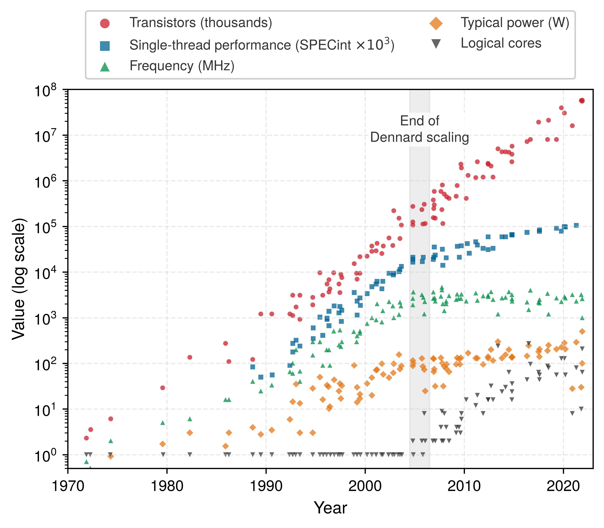
Системные парадигмы
Содержание главы
Содержание
- 1 Четыре режима развёртывания на девяти порядках величины
- 2 Физические ограничения развёртывания
- 3 Анализ рабочих нагрузок
- 4 Баланс системы и аппаратное обеспечение
- 5 Облачное машинное обучение: вычислительная мощь
- 6 Edge ML: задержка и приватность
- 7 Mobile ML: офлайновый интеллект
- 8 TinyML: повсеместное сенсорное оснащение
- 9 Выбор парадигмы развёртывания
- 10 Гибридные архитектуры
- 11 Что общего у всех уровней
- 12 Заблуждения и ловушки
- 13 Резюме
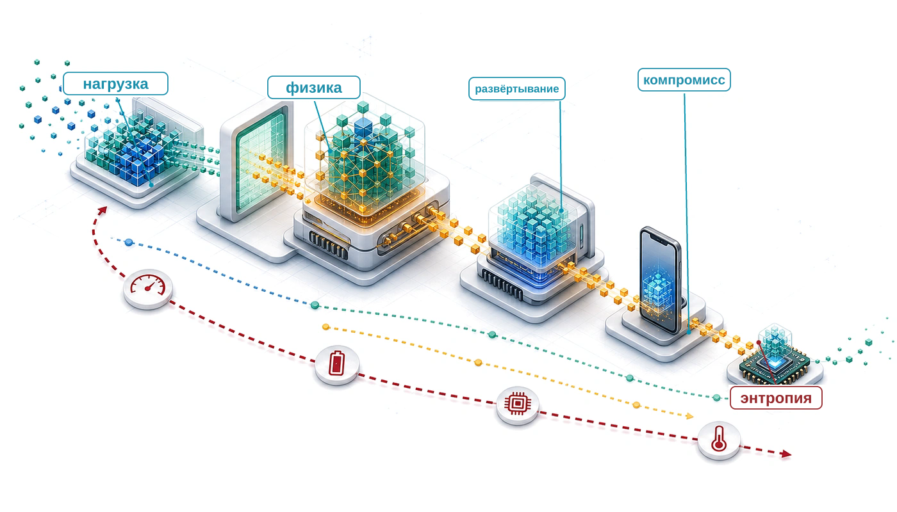
Назначение
Почему развёртывание одной и той же модели на телефоне и в центре обработки данных требует принципиально разной инженерии?
Ключевая идея инженерии систем машинного обучения состоит в том, что ограничения определяют архитектуру. Скорость света задаёт абсолютный нижний предел скорости отклика удалённых серверов, термодинамика ограничивает объём вычислений в данном объёме пространства до того, как выделение тепла станет неуправляемым, а физика памяти делает перемещение данных более затратным, чем их обработку. Поскольку эти физические пределы сохраняются по мере совершенствования технологий, категории развёртывания именуют повторяющиеся режимы ограничений, а не фиксированные взаимоисключающие классы оборудования, и одно устройство может находиться более чем в одном режиме. Центр обработки данных может обучать модели с миллиардами параметров, но не может гарантировать низкозадержный отклик пользователям за тысячи километров. Смартфон может отвечать мгновенно, однако располагает лишь малой долей бюджета памяти и обязан делить небольшую батарею с остальной электроникой телефона. Микроконтроллер может годами работать от батарейки-таблетки, имея вычислительных ресурсов едва достаточно для простого детектора ключевого слова. В этих режимах бюджеты энергопотребления различаются примерно на девять порядков — от мегаватт в центре обработки данных до милливатт на микроконтроллере, — а ёмкость памяти — от терабайт до килобайт. Следовательно, одна и та же модель на одних и тех же данных требует в каждом режиме радикально разной инженерии — не потому, что меняется физика, а потому, что доминируют разные ограничения. Инженерная задача состоит не в том, чтобы найти универсально лучшее развёртывание, а в том, чтобы определить ограничивающее условие в целевом режиме эксплуатации. В терминах D·A·M понимание этих режимов превращает развёртывание из операционной мысли после факта в задачу совместного проектирования, в которой локальность данных, структура алгоритма и ограничения машины совместно определяют возможное.
Цели обучения
- Объяснить, как физические ограничения формируют парадигмы развёртывания от облака до TinyML
- Диагностировать, какой член «контракта кремния» уровня ограничивает рабочую нагрузку, отделяя пределы «железного закона» от ограничений осуществимости по памяти и энергии
- Сопоставлять требования рабочей нагрузки с бюджетами развёртывания на примерах «маячных» моделей
- Сравнивать облако, периферию (edge), мобильные устройства и TinyML по операционным ограничениям и количественным компромиссам
- Применять фреймворк принятия решений для выбора парадигм по ограничениям приватности, задержки, ресурсов и стоимости
- Анализировать гибридные паттерны, комбинирующие парадигмы для удовлетворения системных ограничений
- Оценивать варианты размещения развёртывания по дедлайнам локальности данных, энергии на инференс и стоимости жизненного цикла
1 Четыре режима развёртывания на девяти порядках величины
Детектор wake-word на смарт-часах работает в пределах бюджета мощности в милливатты и ограничений памяти в килобайты, тогда как рекомендательная система в центре обработки данных опирается на терабайты таблиц эмбеддингов и инфраструктуру мегаваттного масштаба. Они находятся на противоположных концах диапазона машин, исполняющих машинное обучение. Таксономия D·A·M из введения (Рисунок 4) рассматривала данные, алгоритм и машину как три взаимодействующих измерения одной задачи проектирования, и в реальных развёртываниях машина — то измерение, которое меняется наиболее резко. Её физические пределы определяют, какие варианты данных и алгоритмов остаются доступными.
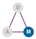
Ось машины задаёт огибающую развёртывания.
Эти физические ограничения определяют, где может исполняться модель, и ни один алгоритмический выбор не может их отменить; при этом они ограничивают всю систему в целом, а не только веса модели. Конвейеры приёма данных, извлечение признаков, среды исполнения (runtime) для обслуживания моделей, телеметрия и менеджеры аппаратных ресурсов должны все помещаться в физическую огибающую хост-платформы.
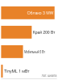
Мощность падает от мегаватт в облаке до милливатт в TinyML.
Три физических предела — задержка (latency), рассеиваемая мощность и память — упорядочивают этот диапазон от мегаватт до милливатт в четыре парадигмы развёртывания.1 Сопоставление рабочей нагрузки с целевой платформой определяет, какой из пределов будет достигнут первым. Централизация вычислений в Cloud ML даёт эластичные вычисления и большую ёмкость памяти ценой задержки глобальной сети на каждом инференсе. Перенос рабочих нагрузок в Edge ML устраняет сетевой обходной цикл и удерживает чувствительные данные на своей площадке (Shi и др. 2016 г.), но ограничивает доступные вычисления мощностью и охлаждением локальной площадки. Переход на устройства с батарейным питанием — Mobile ML — обеспечивает отзывчивое взаимодействие непосредственно на телефонах и планшетах в условиях пассивного теплового огибающего, где длительные вычисления вызывают троттлинг: чип замедляет сам себя, чтобы рассеять тепло. На низкомощном крае спектра TinyML исполняется на микроконтроллерах (Janapa Reddi и др. 2022 г.), чьи бюджеты мощности в милливатты и память в килобайты требуют компактных моделей и целочисленной арифметики.
Четыре категории перекрываются: «периферия» (edge) описывает физическую близость к данным, тогда как «мобильные» и TinyML различают локальные устройства по огибающим их ресурсов. Расположенные вдоль одного физического континуума, эти уровни простираются от мегаватт масштаба склада в центрах обработки данных до милливатт на встраиваемых микроконтроллерах (Рисунок 1). На рисунке показаны диапазоны для TinyML, edge AI и cloud AI; мобильное ML занимает положение интеллектуального устройства — между сверхнизкомощными датчиками и шлюзом.
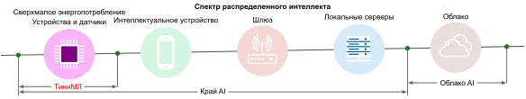
Пока Рисунок 1 прослеживает непрерывную прогрессию от встраиваемых датчиков до центров обработки данных, Таблица 1 количественно описывает концептуальные операционные огибающие по месту обработки, обходной задержке, потребляемой мощности и ёмкости памяти. Строка облака описывает мощность объекта; остальные строки описывают локальные системы или устройства. Эти огибающие сравнивают масштабы развёртывания, физическая основа которых раскрывается в Глава 2.
| Парадигма | Где | Задержка (мс) | Мощность | Память | Лучше всего для |
|---|---|---|---|---|---|
| Cloud ML | Дата-центры | 100-500 | МВт | ТБ | Обучение, сложный инференс |
| Edge ML | Локальные серверы | 10-100 | 100 Вт | ГБ | Инференс в реальном времени, приватность |
| Mobile ML | Смартфоны | 5-50 | 3–5 W | ГБ | Персональный ИИ, офлайн |
| TinyML | Микроконтроллеры | 1-10 | мВт | КБ | Постоянно активное восприятие |
На каждом уровне аппаратное обеспечение предлагает контракт кремния: скорость вычислений, пропускную способность памяти и накладные расходы на исполнение. Каждый из них входит в один член железного закона систем машинного обучения (Железный закон МЛ-систем, переформулирован в этой главе как Уравнение 4), который раскладывает сквозное время исполнения на перемещение данных, вычисления и фиксированные накладные расходы. Пропускная способность памяти задаёт время перемещения данных, скорость вычислений — время вычислений, а накладные расходы на исполнение — фиксированное время, которое запрос платит независимо от своего размера, например планирование и диспетчеризация среды исполнения. Удалённое развёртывание добавляет к этим накладным расходам сетевые обходные циклы. Разные уровни предлагают разные бюджеты для этих ресурсов, поскольку их задают физические ограничения. Контракт также включает ёмкость памяти — не член времени исполнения, а предусловие, определяющее, помещается ли рабочая нагрузка на уровень вообще. На уровнях с батарейным питанием он несёт второе предусловие — бюджет энергии, который определяет, может ли уровень позволить себе исполнять рабочую нагрузку так часто, как требуется приложению.
Само аппаратное обеспечение образует континуум, однако на разных участках этого диапазона доминируют три физических предела: скорость света, тепловыделение и сигнализация памяти — время и энергия, необходимые для перемещения данных между памятью и процессором. Именно смещение этих пределов объясняет, почему парадигмы развёртывания существуют как отдельные инженерные режимы, а не как произвольные точки на непрерывной шкале.
2 Физические ограничения развёртывания
Система обеспечения безопасности с бюджетом реакции 10 ms не может ждать межконтинентального кругового обхода сети, а модель с миллиардом параметров не удастся уместить в микроконтроллер одним лишь улучшением кода. Оба вывода напрямую следуют из физических законов, управляющих скоростью света, термодинамикой энергопотребления и сигнализацией памяти. Световой барьер ограничивает отзывчивость удалённых систем, энергетический предел — устойчивую пропускную способность, а предел памяти — объём передачи данных. Поэтому место, где работает система, меняет условия её «кремниевого контракта» и, вместе с ними, то, что аппаратное обеспечение может предложить модели.
↩︎ Первый набросок спектра развёртывания и его трёх пределов приведён в Контекст развёртывания формирует жизненный цикл.
Световой барьер
Отправка пакета данных от датчика из Калифорнии в облачный дата-центр в Виргинии (~3,600 km по прямой) требует ~36 ms round-trip распространения по оптоволокну ещё до того, как начнётся хотя бы одна операция с плавающей запятой, а реальная сеть добавляет сверху задержки маршрутизации, протоколов, очередей и обработки. Любое приложение, которому нужен отклик менее чем за 10 ms, не может полагаться на удалённую облачную инфраструктуру, какими бы быстрыми ни были удалённые ускорители. Световой барьер задаёт этот абсолютный нижний предел задержки (latency)2. Пусть
Энергетический предел (power wall)
Удвоение тактовой частоты процессора, позволяющее выполнить арифметику модели вдвое быстрее, не просто удваивает его энергопотребление. Более высокие частоты обычно требуют более высокого напряжения питания для надёжного переключения транзисторов, поэтому динамическая мощность может вырасти примерно в восемь раз, а каждый дополнительный ватт превращается в тепло, которое корпус и система охлаждения должны отводить. Этот тепловой потолок — энергетический предел (power wall), ограничивающий объём вычислений в заданном объёме устройства. Динамическая мощность КМОП-логики подчиняется Уравнение 2, где
Когда широкое масштабирование напряжения прекратилось в середине 2000-х годов,3 эта кубическая закономерность положила конец «бесплатному» росту частоты и вынудила разработчиков аппаратного обеспечения обратиться к параллелизму (многоядерным CPU) и предметно-ориентированной специализации (GPU и тензорным процессорам (TPU)4). Рисунок 2 фиксирует этот поворот на примере пяти десятилетий процессоров. От середины 2000-х до начала 2020-х крупнейшие чипы получили примерно 190× больше транзисторов, однако максимальная тактовая частота осталась вблизи 4.7 GHz, а производительность одного потока выросла лишь на 5× — против 21× за предыдущее десятилетие. Дополнительные транзисторы вкладывались в большее число ядер и специализированные блоки, а не в ускорение одного потока.
Тот же предел наиболее жёсток на мобильных устройствах, упирающихся в тепловой потолок на уровне 3–5 W; его превышение вызывает «троттлинг» (throttling), при котором устройство снижает производительность, чтобы избежать перегрева, — пример разобран на прикидочных расчётах в 2.9. Этот физический предел порождает мобильный ML: устройства с батарейным питанием не могут просто запускать локально модели облачного масштаба.
Предел памяти (memory wall)
Матричные блоки ускорителя способны завершить блок умножений за наносекунды, но значительную часть шага инференса простаивают, пока веса и активации (промежуточные результаты каждого слоя) медленно поступают из внешней DRAM. Предел памяти (memory wall) (Wulf и McKee 1995 г.) называет это растущее расхождение между скоростью процессора и скоростью доставки данных из памяти, которое в ML проявляется прежде всего как дефицит пропускной способности5. Грубая прикидка с представительными годовыми коэффициентами роста показывает, почему расхождение накапливается:
В Уравнение 3 числитель и знаменатель — безразмерные годовые коэффициенты роста. Отношение выше 1 означает, что вычислительная мощность отрывается от пропускной способности памяти, поэтому с каждым поколением аппаратного обеспечения перемещение данных занимает всё большую долю проблемы производительности, если рабочая нагрузка не повышает локальность или арифметическую интенсивность (число операций на один перемещённый байт).
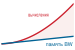
Вычислительная мощность опережает пропускную способность памяти; расширяющийся разрыв и есть «стена памяти».
Это иллюстративное сравнение трендов предполагает, что вычислительная мощность удваивается каждые 18 months, то есть примерно в 1.6× в год (числитель в Уравнение 3), тогда как пропускная способность памяти растёт примерно на 20 percent в год (знаменатель). Эти принятые темпы иллюстрируют расширяющийся разрыв, а не прогноз для каждого поколения аппаратного обеспечения. Если такие темпы сохраняются в течение десятилетия, вычислительная мощность оказывается примерно в 16× раз дальше впереди пропускной способности, чем на старте.
Этот расширяющийся разрыв делает перемещение данных частым узким местом — как по времени, так и по энергии — для рабочих нагрузок машинного обучения. Размещённое на кристалле арифметико-логическое устройство (АЛУ) работает через короткие локальные соединения, тогда как обращение к DRAM вне кристалла задействует также интерфейсы памяти и более длинные межсоединения. На представительном аппаратном обеспечении выборка операндов из DRAM может обходиться на порядки дороже по энергии, чем арифметические операции над ними (Horowitz 2014 г.). Это соотношение зависит от операции, числовой точности, технологии памяти и объёма передаваемых данных. Данное ограничение затрагивает все парадигмы, причём на устройствах TinyML оно принимает иную форму: там обычно первым исчерпывается объём, а не пропускная способность.
↪ Архитектурные ответы на стену памяти — высокоскоростная память HBM и иерархии SRAM на кристалле — рассматриваются в Иерархия памяти.
Контрольная точка 2.1: Физические ограничения и развёртывание
Выбор при развёртывании определяется физикой, а не только предпочтениями. Проверьте своё понимание:
Эти физические законы объясняют компромиссы, стоящие за четырьмя парадигмами. Физические пределы определяют, какие конструкции вообще могут работать; регулирование конфиденциальности, экономические стимулы и требования суверенитета данных дополнительно сужают выбор внутри этих пределов. Никакое регулирование не ускорит скорость света, и никакая экономическая модель не отменит термодинамику. Стены действуют и совместно: на практике МЛ-система ограничена той стеной, которой она достигает первой, — то есть стеной по тому ресурсу, который рабочая нагрузка исчерпывает быстрее всего относительно его предложения на данном уровне. Для количественной оценки этих пределов нужны аналитические инструменты: «железный закон» для разложения времени исполнения на составляющие, принцип узкого места для выявления этапа, ограничивающего темп, и архетипы рабочих нагрузок для классификации потребностей модели в ресурсах.
3 Анализ рабочих нагрузок
То, какую из трёх физических стен система достигнет первой, не является фиксированным свойством семейства моделей. Сеть компьютерного зрения, насыщающая вычислительные блоки ускорителя при батчевом обучении, может упереться в пропускную способность памяти при обработке одного изображения за раз, а модель, без труда работающая в дата-центре, может перегреть телефон менее чем за минуту. Превращение этих физических пределов в количественный диагноз для любой пары «рабочая нагрузка — целевое железо» требует железного закона МЛ-систем из Железный закон МЛ-систем, который здесь переформулирован в той же нотации, поскольку через него анализируется каждый уровень в этой главе. Для последовательного пути исполнения уравнение Уравнение 4 добавляет три слагаемых:
Уравнение Уравнение 4 разлагает полную задержку на три слагаемых: перемещение данных
3.1 Принцип узкого места
Установка вдвое более быстрого ускорителя в конвейеризованный сервер, где загрузка и вычисления перекрываются, не даст ничего для пропускной способности в установившемся режиме, если процессор проводит половину каждого шага в ожидании, пока шина памяти доставит следующую партию весов. Если железный закон количественно оценивает стоимость каждого этапа, то принцип узкого места выявляет, какой этап определяет непрерывную пропускную способность. В Железный закон МЛ-систем была дана перекрытая форма железного закона для конвейерного исполнения, при которой подсистема памяти предварительно загружает батч
Развёртывание добавляет ещё один перекрытый этап,
Когда система ограничена пропускной способностью
3.2 Архетипы рабочих нагрузок
Принцип узкого места сводит оптимизацию к выявлению доминирующего ограничения для данной рабочей нагрузки. Ответ зависит одновременно от всех трёх осей D·A·M: данных, которые несёт запрос, арифметики и потребностей в памяти алгоритма, и машины, которая его исполняет. Разные среды развёртывания создают разные узкие места вдоль этих осей, поэтому одно и то же семейство моделей может требовать разной инженерии при переносе с облачного сервера с терабайтами памяти на микроконтроллер с килобайтами.
Классификация рабочих нагрузок по тому, что ограничивает их первым, даёт четыре архетипа рабочих нагрузок.6 Каждый архетип — это повторяющееся физическое узкое место, определяющее, какие инженерные меры могут помочь. Два из них соответствуют слагаемым железного закона. Два других ограничены предусловиями, которые уравнение времени предполагает уже выполненными: рабочее множество помещается в память, а энергетический бюджет позволяет оплатить прогон. Ограничение по объёму или энергии может поэтому определить осуществимость ещё до вычисления любого слагаемого уравнения Уравнение 4.
Первое разделение, между двумя слагаемыми железного закона, отделяет системы, ограниченные арифметикой, от систем, ограниченных перемещением данных. Рабочая нагрузка, ограниченная вычислениями (compute-bound), выполняет много вычислений на загруженный байт, так что прогресс достигается за счёт более высокой арифметической производительности, лучшей утилизации и более параллельного исполнения; канонический случай — обучение крупных нейронных сетей. Рабочая нагрузка, ограниченная пропускной способностью (bandwidth-bound), напротив, ждёт интенсивного перемещения весов или активаций, так что более широкие шины памяти и лучшее повторное использование данных значат больше, чем дополнительный пик FLOP/s; иллюстрация этого режима — авторегрессионная генерация текста. В литературе по roofline этот режим называется memory-bound; в этой книге он именуется bandwidth-bound, чтобы отличать его от исчерпания объёма памяти — следующего архетипа.
Второе разделение охватывает рабочие нагрузки, где лимитирующее ограничение вовсе не является слагаемым уравнения времени. Нагрузки, ограниченные объёмом (capacity-bound), требуют больше памяти, чем содержит устройство. В рекомендательных системах с большими таблицами эмбеддингов к этому давлению добавляются нерегулярные обращения к таблицам и слабая локальность кэша, так что производительность определяют ёмкость памяти, задержка доступа и коммуникация. Нагрузки, ограниченные энергопотреблением (power-bound), лимитированы энергетическим бюджетом. Энергия на инференс, а не сырая скорость, определяет, может ли вообще работать постоянно включённое сенсорное приложение, поскольку каждый инференс оплачивается из небольшой батареи или собираемой энергии. Нагрузка, ограниченная объёмом, не работает, потому что её данные не помещаются; нагрузка, ограниченная энергопотреблением, помещается, но не может позволить себе работать так часто, как нужно приложению.
Опорный пример 2.1: Пять эталонных рабочих нагрузок
Во введении (Маяковые модели вводят «железный закон» в практику) были представлены пять маячковых моделей по системному узкому месту, которое каждая из них изолирует (Таблица 4); таблица Таблица 2 сопоставляет каждой из них репрезентативный архетип рабочей нагрузки и парадигму развёртывания. Эти классификации описывают режимы работы: батчевая обработка изображений может делать акцент на арифметике, генерация текста по одному запросу — на переносах весов, а большая рекомендательная таблица может превышать объём локальной памяти. Изменение размера батча, размера модели или аппаратуры может изменить лимитирующее ограничение. Таблица фиксирует «домашний» режим каждой модели: ResNet-50 ограничен вычислениями при батчевой обработке изображений, но при обработке одного изображения за раз может оказаться ограниченным пропускной способностью, как показывает roofline-анализ в Глава 4. Таблица Таблица 2 относит MobileNetV2 к ограниченным вычислениями в «эффективном режиме» — это означает гораздо меньше арифметики на изображение, чем у ResNet-50, — однако некоторые его слои выполняют мало операций на байт и могут быть ограничены пропускной способностью на мобильных ускорителях. Какой ресурс ограничивает его на конкретном устройстве, зависит от баланса целевой аппаратуры, точности и батчевания — тех же факторов, что переводят ResNet-50 между режимами. В Архитектуры сетей раскрывается архитектура каждой маячковой модели.
| Маячок | Архетип | Парадигма развёртывания |
|---|---|---|
| ResNet-50 | Ограничен вычислениями | Облачное обучение, периферийный инференс |
| GPT-2/Llama | Ограничен пропускной способностью (декодирование) | Облачный инференс |
| DLRM | Ограничен объёмом | Облако для больших таблиц |
| MobileNetV2 | Ограничен вычислениями (эффективный режим) | Мобильные устройства, периферия |
| Keyword Spotting (KWS) | Ограничен энергопотреблением | TinyML, постоянно включённые устройства |
Каждый архетип тяготеет к тому уровню, который снимает его основное узкое место; отправной точкой служит облако, где пул ресурсов дата-центра объединяет ограниченные вычислениями обучение, ограниченный пропускной способностью памяти декодирование больших моделей и ограниченные ёмкостью таблицы. Классификатор изображений ResNet-50 служит опорной точкой режима, ограниченного вычислениями: он тратит примерно 8.2 GFLOP на изображение при 25.6 million parameters, занимающем 102.2 MB в формате FP32 — 32-битном представлении чисел с плавающей точкой, где каждый вес хранится в четырёх байтах (He и др. 2016 г.). Эта регулярная, плотная по вычислениям структура делает его каноническим бенчмарком производительности аппаратных ускорителей.
Там, где ResNet-50 переиспользует веса между пространственными позициями и батчами, языковые модели GPT-2/Llama в ходе авторегрессионной генерации текста смещают облачное узкое место с арифметики на пропускную способность памяти (Radford и др. 2019 г.; Touvron, Lavril, и др. 2023 г.; Touvron, Martin, и др. 2023 г.). Поскольку модели с миллиардами параметров не помещаются в кэш на кристалле, веса размещаются во внешней памяти, а генерация текста по одному токену для отдельного запроса вынуждает процессор передавать эти веса через шину памяти на каждом токене практически без повторного использования (1.5 billion parameters у GPT-2, 7 billion–70 billion parameters у Llama). Этот последовательный паттерн доступа порождает авторегрессионное узкое место, определяющее стоимость обслуживания моделей (Pope и др. 2023 г.), и удерживает декодирование больших моделей в облаке, если только локально не помещается их уменьшенный вариант.
↪ Непрерывное формирование батчей (continuous batching) и страничная организация KV-кэша — механизмы среды исполнения, обслуживающие генерацию токен за токеном, — рассматриваются в Непрерывное формирование батчей (continuous batching).
Третья облачная рабочая нагрузка упирается в ограничение по памяти ещё до того, как лимитирующим фактором становятся пропускная способность или арифметика. Рекомендательный маяк, DLRM7, — это нагруженная эмбеддингами рекомендательная рабочая нагрузка, стоящая за крупномасштабными системами «Возможно, вам также понравится» (Naumov и др. 2019 г.). Каждый пользователь и каждый элемент представляются эмбеддингом — обученным вектором чисел, который модель находит по идентификатору. По одному вектору на каждого пользователя и каждый элемент: такие таблицы поиска могут превышать 100 GB эмбеддингов, и ограничивающим фактором становится не вычисление, а ёмкость памяти.
Переход от дата-центров к периферийным и мобильным устройствам требует уменьшения этих потребностей в ресурсах на порядки. Мобильный маяк, MobileNetV2, решает ту же задачу классификации изображений, что и ResNet-50, сокращая объём вычислений в 13.7× (Sandler и др. 2018 г.). Это достигается реструктуризацией слоёв фильтрации изображения: каждый дорогой шаг фильтрации разбивается на два значительно более дешёвых (глубинно-разделяемые свёртки). Благодаря такому сокращению модель становится кандидатом для инференса в реальном времени в рамках лимита энергопотребления смартфона 3–5 W; укладывается ли она в срок, определяется реализацией и рабочей нагрузкой.
↪ Как глубинно-разделяемые свёртки раскладывают один шаг фильтрации на два более дешёвых, рассматривается в Глубинно-разделяемые свёртки.
Ещё один шаг вниз, к микроконтроллерам, ставит во главу угла энергопотребление и память в килобайтах. Маяк TinyML — keyword spotting (KWS), распознавание ключевых слов, — воплощает архетип постоянно работающего сенсора: детектирование коротких триггерных фраз компактными моделями, построенными для ресурсно-ограниченных микроконтроллеров (Zhang и др. 2017 г.). Эта опорная рабочая нагрузка имеет примерно 200K parameters, около 200 KB в формате INT8 — 8-битных целых чисел, где каждый вес занимает один байт (веса хранятся во флеш-памяти), — что относит её к режиму TinyML с памятью в килобайтах и бюджетом в милливаттах. Сначала веса должны поместиться в килобайты памяти; когда это выполнено, продолжительность прослушивания устройством определяет энергия, затрачиваемая на каждый инференс, — поэтому в Таблица 2 он отнесён к ограниченным энергопотреблением.
Проверка того, способна ли столь ограниченная рабочая нагрузка вообще выполняться, требует тестирования предусловия по ёмкости до оценки временных членов «железного закона». Умный дверной звонок — сценарий TinyML, проходящий через последующие главы наряду с пятью маяками, — применяет паттерн постоянной работы к зрению и иллюстрирует этот двухуровневый фильтр: сначала проверяется хранение, затем задержка (latency). Модель visual wake-word (Chowdhery и др. 2019 г.), небольшой классификатор, отвечающий лишь на вопрос, находится ли человек в кадре, работает на ESP32-S3 — недорогом микроконтроллере с мегабайтами флеш-памяти для весов и несколькими сотнями килобайт SRAM на кристалле для рабочих данных; позднее Таблица 4 использует тот же чип в качестве своей TinyML-платформы. На уровне 1 0.5 MB 16-битных весов занимают 11.9 percent из 4.2 MB флеш-памяти. Прохождение этой проверки хранения не устанавливает полного соответствия памяти, поскольку промежуточные результаты и состояние среды исполнения также должны помещаться в SRAM — это двухуровневое разделение раскрывается в Глава 8.1.
Уровень 2 проверки звонка применяет железный закон. Модель требует 25 MFLOP на кадр, а микроконтроллер на этой точности обеспечивает около 0.25 GFLOP/s, так что вычисления занимают 100 ms; примерно 1 ms фиксированных накладных расходов доводят суммарное время до 101 ms. Эта оценка укладывается в канонический бюджет сценария 200 ms; получение данных с сенсоров и любое перемещение данных, не учтённые в оценке, всё ещё подлежат проверке. Более отзывчивый звонок с бюджетом 50 ms меняет вердикт без изменения модели, и именно этот ужесточённый случай отображает Рисунок 3. На графике флеш-память остаётся значительно ниже линии насыщения, тогда как задержка достигает 202 percent своего бюджета. Ограничивающим фактором была не флеш-память, а задержка, и SRAM на кристалле всё ещё требует отдельной проверки.
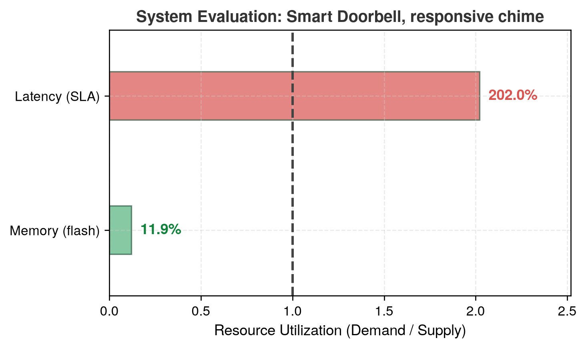
Даже на одном микроконтроллере ужесточение срока превращает задержку из проходной проверки в лимитирующее ограничение, а по всему набору маяков потребности в ресурсах расходятся куда резче. Распознаватель ключевых слов работает с примерно 20 MFLOP на инференс и около 200 KB весов INT8, тогда как ResNet-50 требует около 8.2 GFLOP на изображение и примерно 102.2 MB весов FP32. Референсный пример DLRM уже достигает 100 GB, а Meta демонстрировала масштабирование рекомендательных моделей до 100 TB с помощью выгрузки эмбеддингов (Park и др. 2024 г.); языковые же модели в ходе авторегрессионного инференса многократно считывают миллиарды параметров из памяти. Проходит ли каждая из этих потребностей проверки по ёмкости и времени, зависит от вычислений, пропускной способности и памяти, которые предоставляет конкретная платформа.
4 Баланс системы и аппаратное обеспечение
Модель, которая укладывается в бюджет задержки на бумаге, всё равно может «зависнуть» на реальном хосте, если передачи по PCIe — шине расширения, соединяющей CPU с GPU, — становятся узким местом конвейера или если инференс одиночных примеров оставляет матричные блоки ускорителя голодающими по данным. Сверка железного закона и архетипов рабочих нагрузок с реальным оборудованием означает трассировку запроса через все уровни одного хоста — от целевого значения задержки или пропускной способности приложения вниз до кремния, который должен этот уровень обеспечить.
4.1 Внутри одной машины: одноузловой стек
Когда приложение выполняет запрос на инференс или шаг обучения на одной машине, эта работа проходит вниз через четырёхуровневый одноузловой стек (single-node stack), который уточняет машинную часть таксономии D·A·M для отдельного хоста. На вершине стека приложение сводит данные и алгоритмические требования к целевому значению пропускной способности обучения или задержки инференса, а расположенный под ним ML-фреймворк транслирует код модели в исполняемые операции, призванные обеспечить эту цель. Затем эти операции проходят через операционную систему, драйверы и среду исполнения, которые координируют ресурсы и перемещают тензоры (многомерные массивы чисел) между памятью хоста и памятью ускорителя. Внизу находится само аппаратное обеспечение, где ёмкость памяти, пропускная способность памяти, связи между процессорами и вычислительная производительность задают физические пределы, а «стена памяти» выступает постоянно повторяющимся ограничением.
↪ Как ML-фреймворк превращает код модели в исполняемые операции — в жадном режиме или через захваченный граф — рассматривается в Исполнение: от графов к ядрам.
Аппаратный уровень фиксирует условия, доступные любой модели: пропускную способность памяти
↩︎ Железный закон ML-систем и его разложение сквозной задержки установлены в Железный закон МЛ-систем.
4.2 Сопоставление рабочих нагрузок и аппаратного обеспечения
Проверка того, способен ли кремниевый контракт хоста удовлетворить рабочую нагрузку, проводится в два шага — от грубого к точному — до всякого профилирования на уровне ядер. Грубая проверка спрашивает, помещается ли операция в бюджет задержки в принципе. Точная проверка спрашивает, какой аппаратный ресурс ограничивает операции, которые помещаются, и её ответ зависит от сбалансированности системы — отношения пиковой вычислительной производительности платформы к её пропускной способности памяти.
Задержки операций дают грубую проверку и превращают компромиссы задержка–пропускная способность в решения через конкретные числа. Они охватывают примерно восемь порядков величины: от около наносекунды для попадания в кэш на кристалле или одиночного умножения на ускорителе, через миллисекунды для одного инференса мобильного компьютерного зрения, до десятков или сотен миллисекунд для сетевого вызова через регионы. Числа, которые стоит знать собирает ориентиры иерархии памяти и сетевых круговых задержек вместе с показательными бюджетами задержки приложений. Этот разброс важен из-за одного строгого правила: операция с задержкой
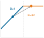
В этом примере формирование батчей перемещает рабочую нагрузку со стороны, ограниченной памятью, к вычислительному потолку.
Для операций, прошедших проверку задержки, сбалансированность системы решает, какой ресурс их ограничивает. Roofline-анализ классифицирует узкие места, сравнивая арифметическую интенсивность рабочей нагрузки — количество операций на каждый перемещённый байт (FLOP/byte) — с сбалансированностью системы платформы
Инференс ResNet-50 на высокопроизводительном дата-центровом ускорителе и на мобильном блоке нейронной обработки (NPU)9 наполняет этот анализ числами. Аппаратные показатели — точечные ориентиры своего времени; рассуждение опирается на вычислительную производительность, пропускную способность памяти и размер батча, которые переживут любой отдельный продукт.
Инженерный расчёт 2.1: ResNet-50 в облаке против мобильного устройства
Задача: Является ли инференс ResNet-50 ограниченным вычислениями или пропускной способностью на (a) высокопроизводительном дата-центровом ускорителе (NVIDIA A100) и (b) флагманском мобильном NPU?
Дано (из эталонных моделей):
- ResNet-50: 8.2 GFLOP на один инференс, 25.6 million parameters (102.2 MB FP32, 51.1 MB FP16)
Анализ:
(a) Дата-центровый ускоритель в облаке (батч = 1, FP16)
Аналитическая модель предполагает, что на один инференс перемещается 56.2 MB, включая трафик весов и активаций. Это смоделированный объём передачи, а не сохраняемый след параметров; повторное использование и выбор среды исполнения могут его изменить.
- Пиковая вычислительная производительность: 312 TFLOP/s (FP16)
- Пропускная способность памяти: 2.04 TB/s
- Время вычислений:
= = 0.026 ms - Время памяти (веса плюс активации):
= = 0.028 ms - Результат: Узкое место = пропускная способность Memory, значит рабочая нагрузка ограничена пропускной способностью (передача памяти в 1.0× медленнее вычислений)
- Точка хребта:
= 312 TFLOP/s ÷ 2.04 TB/s ≈ 153 FLOP/byte. - Анализ: Арифметическая интенсивность =
= 146 FLOP/byte, чуть ниже точки хребта, значит рабочая нагрузка ограничена пропускной способностью; выше хребта она была бы ограничена вычислениями. Для инференса одиночных изображений малый размер батча даёт ограниченное повторное использование, что объясняет, почему даже высокопроизводительные ускорители могут быть ограничены пропускной способностью при батче = 1. Оба времени используют пиковые показатели (эффективность и полная пропускная способность), поэтому они являются нижними границами. Поскольку эта рабочая нагрузка лежит близко к хребту, именно эффективности, которых достигает реальное ядро, решают, какой из двух членов доминирует на практике.
(b) Мобильное устройство: флагманский NPU (батч = 1, INT8)
При INT8 аналитическая модель предполагает, что на один инференс перемещается 28.1 MB, включая трафик весов и активаций. След INT8-весов ниже — лишь один компонент этого объёма передачи.
- Пиковая вычислительная производительность: ~35 TOPS (INT8; TOPS считает триллионы операций в секунду), характерно для современных мобильных NPU
- Пропускная способность памяти: ~51.2 GB/s (LPDDR5)
- Размер модели: 25.6 MB (квантизация INT8)
- Время вычислений:
= = 0.23 ms - Время памяти (веса плюс активации):
= = 0.55 ms - Результат: Узкое место = пропускная способность Memory, значит рабочая нагрузка ограничена пропускной способностью (передача памяти в 2.3× медленнее вычислений)
Системный вывод: При этих предположениях о пиковых показателях обе платформы ограничены пропускной способностью при инференсе одиночных изображений. Более высокая пропускная способность памяти A100 (2.04 TB/s против 51.2 GB/s = 39.8×) даёт примерно в 19.9× меньшее смоделированное время передачи памяти при заявленных предположениях о трафике FP16 и INT8; это отношение — не измеренное сквозное ускорение инференса. Поэтому приёмы сокращения байтов и снижения точности могут превзойти покупку большего пикового FLOP/с при развёртывании.
ResNet-50 становится ограниченной вычислениями, когда формирование батчей и повторное использование данных повышают количество вычислений на перемещённый байт выше точки баланса системы (гребневой точки),
Разрыв в размере батча между батчевым обучением и инференсом по одному изображению — лишь один пример более широкого изменения между фазами исполнения, при котором физические ограничения перестраивают все три оси D·A·M одновременно. Обучение обновляет веса модели на батчах примеров, поэтому веса изменяемы; обслуживание применяет фиксированные, неизменяемые веса к новым входам. Таблица 3 противопоставляет типичные требования обучения и чувствительного к задержке обслуживания; облачное обслуживание может также формировать батчи из запросов ради пропускной способности.
| Компонент | Обучение (изменяемое) | Инференс (неизменяемый) |
|---|---|---|
| Данные | Высокая пропускная способность: большие батчи, перемешивание, аугментация | Низкая задержка (latency): одиночные образцы, свежесть, скорость |
| Алгоритм | Фаза обучения: обновление параметров модели по примерам | Фаза предсказания: применение фиксированных весов к новым входам |
| Машина | Оптимизация под пропускную способность: кластеры с высокой полосой, большой объём памяти | Оптимизация под задержку: периферийные устройства, инференс-ускорители |
Расширяя сопоставление облака и мобильных устройств из «прикидочной» математики 2.1 на все четыре уровня развёртывания, мы привязываем концептуальные режимы из Таблица 1 к конкретному аппаратному обеспечению. Таблица 4 ставит в соответствие каждому парадигме одну реальную платформу и дополняет её аппаратной характеристикой на одно устройство, отмечающей данный уровень.10 Столбцы примера платформы и мощности описывают полные системы, включая облачный под.
Столбцы «вычисления уровня» и «пропускная способность памяти уровня» описывают одно устройство. Каждая ячейка в них задаёт пороговое значение уровня — пиковую скорость, характеризующую одно устройство этого уровня, — и каждое пороговое значение вычислений указано в той числовой точности, на которую ориентированы чипы этого уровня. Поскольку эти точности различаются, столбец вычислений не ранжирует уровни. Облачная запись считает 16-битные операции на одном дата-центровом ускорителе, тогда как периферийная запись считает операции гораздо меньшей точности, которые высокопроизводительный чип рабочей станции исполняет значительно быстрее. При сравнении на одних и тех же 16-битных операциях один чип TPU v4 даёт 2.2× плотной 16-битной пропускной способности и 4.4× пропускной способности памяти DGX Spark. Пометка в каждой ячейке указывает, какой это порог: нижняя граница (≥), верхняя граница (≤), приближённое значение (~) или диапазон по репрезентативным устройствам.
При сравнении как полных систем, а не эквивалентных отдельных чипов, четыре платформы охватывают огромные диапазоны. Память падает с 128 TB (облако) до 512 KB (TinyML) — сокращение в 268 миллионов раз. Мощность варьируется примерно от 3 MW для облачного пода до целевого показателя средней мощности уровня TinyML в < 1 mW. Стоимость оборудования охватывает шесть порядков величины — от кластеров за миллионы долларов до микроконтроллеров за $10. Вместе с накладными расходами на инфраструктуру, такими как эффективность использования энергии (PUE),11 эти разбросы определяют, какой парадигма может экономно обслужить рабочую нагрузку, и объясняют, почему сжатие моделей становится необходимым по мере ужесточения бюджета.
Спектр аппаратного обеспечения превращает диагностику узких мест в проверку на соответствие: каждая рабочая нагрузка должна быть сопоставлена с тем уровнем, чьи ограничения по вычислениям, пропускной способности, мощности и стоимости она способна удовлетворить.
↪ Переход от сопроцессоров с плавающей запятой к специализированным на конкретной области AI-ускорителям рассматривается в Специализированные вычисления.
| Парадигма | Пример платформы | Вычисления уровня | Память уровня (BW) | Мощность | Цена | Ограничивающее условие |
|---|---|---|---|---|---|---|
| Облачный ML | Google TPU v4 Pod: 4,096 TPU v4 chips по 275 TFLOP/s BF16 каждый (1.1 EFLOP/s суммарно), 128 TB HBM2 | > 200 TFLOP/s | > 1000 GB/s | ~3 MW на под; PUE 1.1–1.3 | Аренда | Вычисления (обучение); пропускная способность памяти (декодирование LLM) |
| Периферийный ML | NVIDIA DGX Spark: GB10 Grace Blackwell (1 PFLOP/s sparse FP4), 128 GB LPDDR5x, 4 TB NVMe | ~1 PFLOP/s | > 270 GB/s | ~200 W; типичный класс 100 Вт | ~$3,000–$5,000 | Пропускная способность памяти |
| Мобильный ML | Флагманский смартфон: мобильная SoC (CPU + GPU + NPU), 8–16 GB RAM, 128 GB-1 TB накопитель | 15–45 TOPS | 51.2–77 GB/s | 3–5 W | $999+ | Энергия (батарея и нагрев) |
| TinyML | ESP32-S3: двухъядерный @ 240 МГц, 512 KB SRAM, 4.2 MB flash | < 1 TOPS | — | 0.05 W–1.2 W активная; < 1 mW целевая средняя | $10 | Ёмкость памяти (рабочее состояние должно помещаться в SRAM) |
Системный взгляд 2.1: Баланс системы между парадигмами
Последний столбец Таблица 4 рассматривает каждый уровень через конвейерное ограничение из Уравнение 5. Для облака и периферии ограничивающее условие — член этого ограничения, тогда как для мобильных устройств и TinyML — предел, который уравнение времени не учитывает, и на каждом уровне доминирующее ограничение задаёт стратегию оптимизации. Облачное обучение, ограниченное вычислениями, вознаграждает более высокую утилизацию ускорителей и большие батчи. Декодирование больших языковых моделей (LLM), ограниченное пропускной способностью (генерация токен за токеном), и периферийный инференс, ограниченный пропускной способностью, вознаграждают перемещение меньшего числа байтов (через меньшие модели, меньшую точность и большее повторное использование на загруженный вес), поэтому более быстрый ускоритель им почти не помогает.
Переход к устройствам с батарейным питанием добавляет неявный энергетический член, батарейные и тепловые ограничения которого развивает Глава 7. Мобильные системы интегрируют мощность по времени при жёстком тепловом лимите, что делает выгодными для времени работы от батареи и устойчивой скорости пониженную точность и циклическое использование (работу модели лишь часть времени). TinyML сталкивается со строгим предусловием по памяти до того, как применимы какие-либо временные или энергетические члены: веса и код должны помещаться во flash, а активации и состояние среды исполнения — в SRAM, что достигается компактными моделями и арифметикой низкой точности. Воздействие на ограничивающий член сопоставляет каждый доминирующий член с работающими оптимизациями и теми, что оказываются напрасными, превращая эту диагностику в план действий.
Каждая парадигма, таким образом, является рабочим конвертом с различными ресурсными бюджетами, а путь от складских дата-центров вниз к микроконтроллерам прослеживает физический градиент, обменивающий сырую вычислительную пропускную способность на энергоэффективность и эффективность памяти. Четыре раздела, которые следуют далее, проходят этот градиент по одному уровню за раз. Каждый задает одни и те же четыре вопроса, которые карта ограничений в каждом разделе рисует в виде четырёх ветвей: какое ограничение лимитирует уровень, как отвечает система, где парадигма терпит неудачу и какие рабочие нагрузки ей подходят. Поскольку эта структура общая, каждый раздел сосредоточивается на том, что отличает его уровень, и на одном-двух расчётах, решающих, относится ли рабочая нагрузка к нему.
5 Облачное машинное обучение: вычислительная мощь
На вершине этого физического градиента находится облачное ML, которое объединяет питание, охлаждение и ускорители в централизованных дата-центрах для обслуживания рабочих нагрузок, которые ни одна локальная машина не может удержать. Оценочные ресурсы, необходимые для обучения GPT-3 (Brown и др. 2020 г.), показывают, почему этот уровень существует: 3,634 PFLOP-days вычислений, эквивалентных 10,000 V100 GPUs, работающим примерно 15 days при заявленной устойчивой скорости, и около 1.3 GWh электроэнергии (Patterson и др. 2021 г.). PFLOP-день — это
«Горький урок» проявляется на облачном уровне в виде аппаратного обеспечения: общие методы, улучшающиеся с ростом вычислений, продолжают побеждать, а вычисления, которые они потребляют, концентрируются там, где можно объединить мегаватты мощности и жидкостное охлаждение. Когда сетевая задержка может быть терпима, облако предлагает вычислительный масштаб, который не может сравниться ни с одной другой парадигмой, хотя модель, обученная в облаке, или её меньшая производная версия могут позднее обслуживаться рядом с пользователями и сенсорами.
↩︎ «Горький урок» — изложенное в книге объяснение того, почему общие методы, масштабируемые вычислениями, продолжают побеждать — устанавливается в Горький урок.
Централизация этих ресурсов в модели утилиты12 позволяет провайдерам собирать специализированные топологии ускорителей, адаптированные к различным аппаратным требованиям. Эта инфраструктура служит естественным домом для трёх из четырёх архетипов рабочих нагрузок. Вычислительно-ограниченные рабочие нагрузки, такие как обучение ResNet, требуют устойчивых TFLOP/s на тысячах ускорителей. Рабочие нагрузки, ограниченные пропускной способностью, такие как инференс больших языковых моделей, выигрывают от TB/s HBM-пропускной способности. Рабочие нагрузки, ограниченные ёмкостью, такие как рекомендательные движки в стиле DLRM, имеют таблицы эмбеддингов, которые в совокупности регулярно превышают терабайты — далеко за пределами любого отдельного ускорителя. Эти таблицы шардированы по объединённой памяти хостов и ускорителей, так что распределённые поиски и обновления обучения предъявляют тяжёлые требования к межсоединению кластера.
Даже облачно-центрированные сервисы распределяют работу между уровнями. Голосовой ассистент опирается на облако для понимания языка, тогда как его постоянно активный этап wake-word работает на устройстве — разделение, которое количественно оценивается в Глава 10.
Облачный масштаб также не вытесняет единичную машину. Облачные развёртывания масштабируются от инстансов с одним ускорителем до кластеров складского масштаба, однако каждый из этих масштабов строится из единичных машин, и пределы одной машины из Глава 4.1 остаются в силе внутри каждой из них.
↪ Границы ёмкости памяти и паттерны разреженной выборки (sparse gather) таблиц эмбеддингов высокой кардинальности развиты в Разреженные архитектуры: рекомендательные системы.
Определение 2.1: Облачное ML
Облачное машинное обучение — это парадигма развёртывания, обменивающая задержку на эластичные вычисления путём размещения ML-нагрузок в централизованных дата-центрах, отделяя вычислительную мощность от физического расположения источников данных и пользователей.
- Значимость: Облачное развёртывание предлагает наибольший
среди всех уровней: облачный регион может объединить тысячи ускорителей, при этом доступ регулируется ёмкостью, квотами и стоимостью. Обратная сторона — слагаемое : минимальная задержка кругового обхода 10–100 мс (задаваемая скоростью света на континентальных расстояниях) делает эти далёкие облачные пути неосуществимыми для рабочих нагрузок, требующих отклика менее 10 мс. - Отличие: В отличие от пограничного (edge) ML, который отдаёт приоритет локальному отклику и локальности данных при фиксированном
, облачное ML отдаёт приоритет эластичному за счёт переменной . - Типичная ошибка: Частое заблуждение состоит в том, что облачное ML — это «неограниченные вычисления». В действительности задержка кругового обхода, налагаемая расстоянием
, и время перемещения данных в дата-центр — это физические ограничения, которые не может устранить никакая программная оптимизация, задавая жёсткий нижний предел времени отклика для любой рабочей нагрузки, чьи данные возникают вне дата-центра.
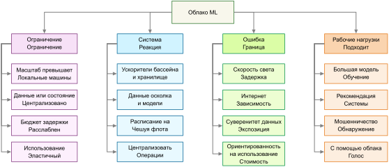
Объединение эластичных ускорителей и разбиение моделей между ними преодолевают локальные пределы ёмкости, но наталкиваются на жёсткие границы отказа в виде задержки распространения на скорости света и зависимости от интернета (Рисунок 4). Рабочие нагрузки, процветающие в этом режиме (такие как асинхронное обнаружение мошенничества, батчевые обновления рекомендаций и предобучение больших языковых моделей), принимают этот компромисс, потому что масштаб важнее мгновенного отклика. Когда же приложение требует управления в реальном времени, сетевая задержка перестаёт быть инженерным неудобством и становится жёстким физическим барьером. Расчёт светового барьера уже исключил трансконтинентальный дата-центр для бюджета 10 мс; более острый вопрос — справляется ли лучше региональный дата-центр, гораздо более близкий к защищаемой им машине.
Инженерный расчёт 2.2: Штраф за расстояние
Задача: Рассмотрим монитор безопасности реального времени для роботизированной руки на заводском цехе. Логика безопасности требует времени отклика от конца до конца 10 ms, чтобы предотвратить травму, поэтому имеет значение штраф за расстояние, налагаемый световым барьером. Модель работает в региональном облачном дата-центре на удалении 1,500 km — менее половины трансконтинентального расстояния. Можно ли соблюсти бюджет безопасности?
Физика:
- Свет в оптоволокне: ~200,000 km/s.
- Распространение туда и обратно: (1,500 km
2)/200,000 km/s = 15 ms. - Результат: Одно лишь распространение туда и обратно требует 15 ms, превышая бюджет от конца до конца 10 ms на 5 ms ещё до того, как модель выполнит какой-либо инференс.
Системный вывод: Указанный путь к региональному облаку не укладывается в бюджет уже из-за одного распространения и, следовательно, неосуществим. Запуск модели рядом с рукой устраняет это слагаемое удалённого распространения, но полный локальный путь сенсорики, инференса и управления всё равно должен быть проверен на соответствие дедлайну.
5.1 Облачная инфраструктура и масштаб
Когда, однако, рабочая нагрузка не сидит внутри миллисекундного контура управления, принятие сетевого расстояния покупает физический масштаб внутри дата-центра, к которому не может приблизиться ни одна локальная установка. Обучение модели переднего края на сотнях терабайтов данных требует соединения тысяч чипов ускорителей настолько плотно, чтобы они вели себя как один компьютер. Проекты TPU-суперкомпьютеров организуют тысячи специализированных чипов ускорителей в системы масштаба дата-центра, доставляющие редуцированную точность от PFLOP/s до EFLOP/s (Jouppi и др. 2023 г.) — на порядки выше строк edge и mobile в Таблица 4. Установки складского масштаба упаковывают проходы жидкостно-охлаждаемых стоек и плотной оптической кабельной разводки, потребляющие мегаватты для поддержания этой матричной пропускной способности экзафлопсного масштаба (Рисунок 5), обеспечивая физический масштаб, который делает обучение на сотнях терабайтов данных практичным.
↪ Что меняется, когда обучение выходит за пределы одного узла, развито в Масштабирование за пределами одного узла.
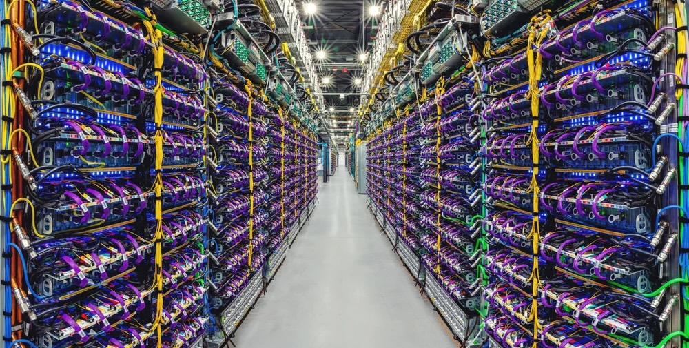
Централизация также меняет то, как модели обслуживаются и управляются. Облачные API делают обученные модели доступными по всему миру на мобильных, веб- и IoT-платформах. Общая инфраструктура позволяет инженерным командам сотрудничать с единым контролем версий, а модели оплаты по факту использования превращают авансированные капитальные затраты (CapEx) в операционные расходы (OpEx), привязанные к объёму использования и масштабирующиеся вместе со спросом.
Масштаб не делает облако универсально лучшим выбором. Принцип гравитации данных («Принцип гравитации данных») объясняет почему. Передача набора данных объёма
5.2 Компромиссы и ограничения облачного ML
Региональный сбой в облаке может одновременно вывести из строя всех подключённых клиентов, а внезапный всплеск трафика способен превратить эластичный пул GPU в неуправляемо растущий ежемесячный счёт. Для рабочих нагрузок, чувствительных к задержке (latency), штраф за расстояние — самая существенная из стоимостей облака, а сетевой джиттер делает её не только большой, но и непредсказуемой. Из централизации следуют ещё три издержки: раскрытие данных, которые облако должно принять, расходы, растущие вместе с использованием, и зависимость от сети.
Первая издержка — приватность и безопасность. Передача чувствительных данных в удалённые дата-центры расширяет поверхность раскрытия и усложняет соответствие нормативным требованиям. Организации, работающие с данными, подпадающими под такие регламенты, как Общий регламент по защите данных (GDPR) или Закон о переносимости и подотчётности медицинского страхования (HIPAA), должны выбрать, задокументировать и поддерживать меры защиты, соответствующие данным, системе и применимым юридическим обязанностям. Подходы с сохранением приватности могут сократить объём чувствительных данных, покидающих исходную среду, но они дополняют, а не заменяют инфраструктурные средства контроля.
Вторая издержка — финансовая. Облачная инфраструктура превращает разовые закупки оборудования в постоянные операционные счета, а непредсказуемые всплески использования делают эти счета труднопланируемыми без автоматизированного мониторинга и управления затратами. Сравнение парадигм по «голым» почасовым ставкам ускорителей скрывает накопленные расходы на сетевой трафик наружу (плату провайдера за данные, покидающие его сеть), постоянное хранилище и управляемую оркестрацию. Корректная оценка вместо этого сравнивает совокупную стоимость владения (TCO), включающую электроэнергию, охлаждение и труд персонала и соизмеряющую авансированные капитальные расходы с повторяющимися операционными расходами на протяжении срока службы системы.
Рассмотрим сервис компьютерного зрения, выполняющий 1M инференсов ежедневно в масштабе ResNet-50 (задержка 10 ms, ответ 100 KB) на горизонте 3 years. В облачной конфигурации 4 экземпляров выделяются ради резервирования и запаса на пиковый трафик, а не только под среднюю пропускную способность. Таблица 5 детализирует ежегодные затраты такого развёртывания с фиксированной ёмкостью в облаке на GPU, сеть, балансировщик нагрузки и наблюдаемость по публичным прайс-листам, а Таблица 6 детализирует затраты локального периферийного сервера на оборудование, электроэнергию, охлаждение, сеть и труд DevOps. Обе таблицы ограничивают иллюстративный частичный бюджет, а не полный, согласованный TCO, поскольку опущены операционный труд в облаке, резервирование на периферии, установка площадки и восстановление после отказов, а эквивалентная доступность не установлена.
| Компонент затрат | Расчёт | Годовая стоимость |
|---|---|---|
| Инференс на GPU | 4 экземпляров |
~$26,280 |
| Сетевой трафик наружу | 100 GB/day |
~$3,285 |
| Балансировщик нагрузки | $0.025/hr + единицы ёмкости | ~$3,723 |
| Мониторинг/логирование | Мониторинг, оповещения | ~$2,000 |
| Итого облако | ~$35,288/year |
| Компонент затрат | Расчёт | Годовая стоимость |
|---|---|---|
| CapEx на оборудование | $15,000 ÷ срок службы 3 years | ~$5,000 |
| Электроэнергия (24/7) | 300 W |
~$315 |
| Накладные на охлаждение | ~30% от затрат на электроэнергию | ~$95 |
| Сеть (оптоволокно) | Выделенная линия для удалённого управления | ~$1,200 |
| Труд DevOps | 0.1 FTE |
~$15,000 |
| Итого периферия | ~$21,610/year |
Инженерный расчёт 2.3: Годовые бюджеты: облако против периферии
Задача: В рамках частичных границ учёта, детализированных в Таблица 5 и Таблица 6, какая реализация имеет меньший расчётный годовой бюджет на горизонте 3 years?
Математика: Вопрос касается годовой стоимости в этой рабочей точке, поэтому сравнение — это разрыв между годовыми итогами облака и периферии.
При 1M инференсов в день разрыв составляет ~$35,288/year − ~$21,610/year = ~$13,678/year. Почти вся стоимость облака — это выделенная ёмкость, а не фактическое использование. При 10 ms на запрос дневному трафику требуется лишь около 2.8 GPU-часов из 96 выделенных — утилизация около 2.9 percent. С трафиком масштабируется только трафик наружу.
Результат: Перечисленный бюджет периферии в этой рабочей точке дешевле примерно на 38.8 percent. Поскольку один лишь фиксированный облачный пул уже стоит дороже перечисленного бюджета периферии, ни один уровень трафика при таком фиксированном выделении ёмкости и частичном учёте не делает облако дешевле. Подлинный анализ точки безубыточности потребовал бы облачной ёмкости, масштабирующейся вместе со спросом. Этот вердикт относится к одному серверу и фиксированному пулу; распределяя периферийную архитектуру по многим площадкам, добавляется операционный труд, способный свести на нет периферийную экономию, как показывает ловушка с затратами в Глава 12.
Системный вывод: Перечисленный бюджет периферии доминируется трудом (~$15,000 ÷ ~$21,610/year ≈ 69.4 percent), а не оборудованием. Организациям без существующей DevOps-компетенции следует закладывать полную стоимость сопровождения локальной инфраструктуры.
Сетевая зависимость — последняя из трёх издержек — создаёт угрозу доступности: любой разрыв связности между клиентами и дата-центром немедленно деградирует или останавливает сервис. Проприетарные облачные API усугубляют зависимость привязкой к поставщику (vendor lock-in), затрудняя перенос рабочих нагрузок от одного провайдера к другому. Тем не менее централизованная инфраструктура остаётся уникально приспособленной для сервисов потребительского масштаба, требующих эластичной ёмкости, — таких как голосовые помощники и рекомендательные системы. Эти приложения разменивают задержку на масштаб, принимая задержку удалённого пути в обмен на вычислительные ресурсы, которые невозможно предоставить локально. Этот обмен терпит неудачу, когда бюджет задержки опускается ниже того, что допускает удалённый путь, или когда объёмы данных превышают возможности сетей, — и тогда вычисления должны переместиться ближе к источнику данных.
6 Edge ML: задержка и приватность
Монитор безопасности роботизированного манипулятора из прикидочных расчётов 2.2 — контур управления промышленного интернета вещей (IIoT)13 — оставлял открытым один вариант: разместить модель рядом с манипулятором, который она защищает. Edge ML строится именно на этом шаге: эластичная облачная ёмкость обменивается на более короткие пути запросов и локальное удержание данных.
В терминах конвейерного железного закона (Уравнение 5) размещение вычислений рядом с датчиком исключает из пути запроса слагаемое широкой сети
Определение 2.2: Машинное обучение на периферийных устройствах
Edge machine learning (Edge ML) — парадигма развёртывания, оптимизированная для локального отклика и локальности данных за счёт физического размещения вычислений рядом с источниками данных.
- Значимость: она обходит «штраф за расстояние»
облака, обменивая эластичное масштабирование на фиксированную локальную вычислительную ёмкость . - Отличие: в отличие от облачного ML, который отдаёт приоритет пропускной способности, edge ML ставит во главу угла дедлайны отклика и контроль над локальными данными. В отличие от TinyML, edge ML может по-прежнему использовать ускорители класса рабочих станций, например GPU общего назначения (GPGPU).
- Типичная ошибка: распространено заблуждение, что edge ML — это конкретный класс аппаратного обеспечения. На самом деле это парадигма размещения: она охватывает всё от IoT-шлюзов до локальных серверов, объединённых физической близостью к источнику данных.
Дедлайны реального времени — не единственный мотив. Правила суверенитета данных и приватности могут запрещать передачу сырых потоков датчиков через внешние сети, что заставляет размещать вычисления на локальных шлюзах, промышленных ПК и серверах на собственной площадке. Размещение вычислений рядом с датчиками и фильтрация данных на месте помогают укладываться в бюджеты отклика менее 100 ms, но при этом вносят границы отказов в виде фиксированной ёмкости узлов и сложностей удалённого управления парком устройств (Рисунок 6).
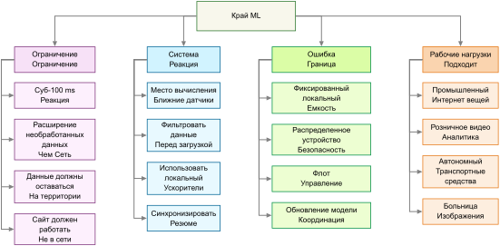
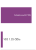
Сырые краевые данные могут быть шире сетевого канала.
Даже когда бюджеты задержки смягчаются, второе ограничение из Рисунок 6 — когда сырые данные датчиков шире сетевого канала — может исключить загрузку в облако по одной лишь пропускной способности. Когда непрерывные скорости приёма данных IoT-датчиков14 превышают ёмкость восходящего канала, локальная фильтрация или инференс должны сократить передаваемый поток до того, как он достигнет дальней сети; а полный набор локальных и удалённых путей затем определяет, где инференс сможет удовлетворить требованиям приложения.
Инженерный расчёт 2.4: Узкое место по пропускной способности
Задача: рассмотрим систему контроля качества на заводском цехе с 100 камерами, работающими при 30 FPS и разрешении 1080p. Становится ли потоковое видео узким местом по пропускной способности, и сокращает ли edge ML трафик достаточно для локальной обработки?
Физика:
- Скорость сырых данных одной камеры: 1920
1080 3 байт 30 FPS ≈ 186.6 MB/s. - Суммарная скорость данных: 100 камер
186.6 MB/s = 18.7 GB/s. - Реальность сети: даже выделенная линия 10 Gbps (1.25 GB/s) не способна нести эту нагрузку, поскольку рабочая нагрузка требует в 14.9× больше пропускной способности, чем существует.
- Стоимость извлечения: загрузка сырых потоков — прежде всего проблема пропускной способности. Если бы сырой поток всё же хранился в облаке, его извлечение оттуда тоже стоило бы денег. Получение данных, например для перевыставления меток отснятого материала ради дообучения, по тарифу $0.09/GB за исходящий трафик стоило бы $4.4M/month.
Системный вывод: передавать сырые потоки по указанному каналу невозможно. Требуется локальная обработка или меньшее передаваемое представление; сжатие меняет расчёт пропускной способности, но обязано сохранять информацию и тайминги, необходимые для обнаружения дефектов. Если краевой сервер передаёт только метаданные о дефектах (1 KB на обнаружение при примерно 20 events/s по всему цеху), пропускная способность падает примерно в 933,120×.
Несжатые потоки сенсорных данных способны насытить восходящий канал — это барьер по пропускной способности для централизованного сбора данных. Для автономных устройств на батарейном питании (беспроводных камер, дронов, носимых устройств) энергозатраты на беспроводную связь вводят ещё более жёсткий физический потолок. Батарейные и тепловые ограничения, стоящие за этим потолком, рассматриваются на примере мобильных устройств в Глава 7; здесь же вопрос лишь в том, обходится ли передача данных дороже по энергии, чем их обработка локально. Офлоад добавляет энергию к анализу на основе времени из Уравнение 5, поэтому выбор между локальной обработкой и офлоадом должен взвешивать и джоули, и миллисекунды.
Инженерный расчёт 2.5: Энергия передачи
Задача: Должно ли устройство на батарейном питании, например телефон, обрабатывать необработанные данные одного инференса локально (на своём NPU) или отправлять их в облако, если энергия передачи должна быть взята из фиксированного батарейного бюджета?
Дано:
- Данные
: 1 MB (необработанные данные одного инференса, иллюстративный объём). - Энергия передачи
: 100 mJ/MB (Wi-Fi/LTE; энергия на байт, приводится на мегабайт). - Энергия вычислений
: 0.1 mJ/inference (иллюстративная точка отсчёта MobileNetV2 только для нейронного процессора, без учёта остального телефона).
Расчёт:
- Облачный подход:
= 1 MB 100 mJ/MB = 100 mJ. - Локальный подход:
Инференс = 0.1 mJ.
Системный вывод: Передача необработанных данных в 1,000× раз дороже их локальной обработки. Даже если отнести к локальному инференсу энергию всего телефона за окно инференса (2.6 mJ, столбец MobileNetV2 на диаграмме Рисунок 7), передача всё равно остаётся в 39× раза дороже. Даже если бы облако обладало бесконечной скоростью
Рисунок 7 отходит от этого попарного сравнения. Он задаёт точки отсчёта энергетической шкалы для разных задач и границ учёта на логарифмической шкале, охватывающей восемь порядков величины. Рисунок выделяет разрыв в 100,000,000× между постоянно работающим инференсом TinyML по распознаванию ключевых слов (около 10 μJ) и запросом к облачной фундаментальной модели (около 1 kJ — точка отсчёта сценарного порядка величины, включающая накладные расходы дата-центра, а не измеренное значение).
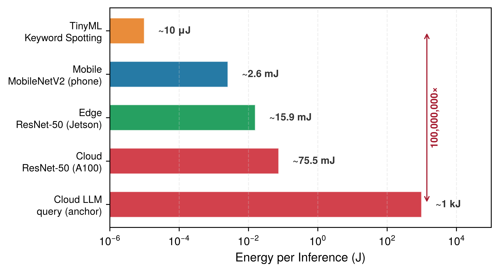
Системный взгляд 2.2: Как читать числа энергии на инференс
Логарифмические сравнения, показанные на Рисунок 7, объединяют полученные решателем оценки энергии устройств с отдельными точками отсчёта шкалы; это не контролируемые измерения полной системы. Каждый столбец для задачи зрения учитывает одно устройство в течение его окна инференса с батчем 1. Столбец облачного ResNet-50, например, относит к A100 среднее потребление около ~130 W в течение 0.57 ms. Он исключает хостовые CPU, память, сеть и охлаждение, доводящие целый сервер до примерно ~1 kW, поэтому учёт того же запроса по целому серверу был бы в несколько раз больше.
Размах становится осязаемым, когда измеряется в привычной единице энергии — аккумуляторе смартфона. Номинальная запасённая энергия аккумулятора 3.7 V, 3000 mAh покрывает около 4 billion inferences для распознавателя ключевых слов, но лишь около 40 queries для облачной LLM. Аккумулятор служит лишь привычной мерой количества энергии: энергия облачного запроса расходуется в дата-центре, а не берётся от телефона. Числа распознавания ключевых слов — тоже не время работы от батареи: фактическое время работы по-прежнему зависит от частоты инференсов, мощности в режиме сна, сенсорики, связи и остального устройства.
6.1 Инвариант локальности данных: когда сеть слишком медленна
Даже если бы дрон или камера на батарейном питании могли позволить себе энергию радио для потоковой передачи необработанного видео, беспроводной канал всё равно провалил бы более непосредственный тест: время. Когда дрон-доставщик снимает 4K-видео с частотой 60 кадров в секунду, чтобы обходить препятствия, пересылка даже одного несжатого кадра по сотовому каналу занимает больше времени, чем интервал 16.7 ms до прихода следующего кадра. Этот компромисс «пропускная способность — задержка» для отдельного запроса определяет выбор между локальной обработкой на краевом устройстве и удалённым облачным офлоадом. Приведённый ниже инвариант локальности данных — это форма принципа гравитации данных из раздела об облаке, применённая к отдельному запросу с жёстким дедлайном. Если гравитация данных взвешивает перемещение целого набора данных против перемещения вычислений, то инвариант взвешивает перемещение одного входа против одного дедлайна. Удалённый путь отвергается, когда его полное время превышает сервисный дедлайн, а среди оставшихся путей побеждает более быстрый.
Определение 2.3: Инвариант локальности данных
Инвариант локальности данных утверждает, что никакое удалённое аппаратное обеспечение не может сократить время отправки входа по сети и обратно, поэтому удалённый путь исключается, когда даже его нижняя граница — сетевое время плюс максимально быстрое удалённое вычисление — превышает сервисный дедлайн. Выражение ниже даёт нижнюю границу полного времени удалённого пути
Эта граница не учитывает перемещение памяти на удалённой стороне, ожидание в очередях, предобработку, накладные расходы среды исполнения и сериализацию ответа, поэтому граница выше дедлайна отвергает удалённый путь, тогда как граница ниже дедлайна лишь делает путь кандидатом для измерения полного времени. Здесь
- Смысл: Инвариантным остаётся время передачи и распространения, которое никакое количество удалённых вычислений
не сокращает. Поэтому инвариант отмечает точку перелома — размер входа, при котором одна передача исчерпывает дедлайн; за его пределами более быстрое удалённое оборудование не спасает удалённый путь, как показывает кадр дрона в прикидочном расчёте 2.6. Локальный путь предпочитается только после проверки его собственного полного времени исполнения и ресурсных ограничений. - Отличие: В отличие от железного закона, который раскладывает один путь исполнения, инвариант локальности использует дедлайн, чтобы отвергнуть идеализированный удалённый путь, а затем требует свидетельств полного пути для выбора между оставшимися альтернативами.
- Типичная ошибка: Распространённое заблуждение состоит в том, что 5G/6G «решает» проблему локальности. Хотя эти технологии улучшают
, они не устраняют задержку распространения и протоколов, поэтому удалённый путь всё ещё может не уложиться в жёсткий сервисный дедлайн.
Формулировка через локальность также объясняет, что получает каждый из локальных уровней — периферия, мобильные устройства и TinyML. Локальное выполнение убирает из пути запроса время передачи по сети (
Дрон, с которого начался этот раздел, показывает, где на практике проходит точка переключения.
Инженерный расчёт 2.6: Точка переключения по локальности
Задача: должна ли система обхода препятствий дрона (4K, 60 FPS) выгружать вычисления в облако, или это случай точки переключения по локальности?
Дано:
- Данные
: кадр 4K ≈ 24.9 MB. - Пропускная способность
: 100 Mb/s — сотовый восходящий канал. - Сетевой и вычислительный отклик удалённой стороны: 110 ms (round-trip + удалённые вычисления).
- Крайний срок завершения на кадр: 16.7 ms, в этом иллюстративном сценарии равный интервалу между кадрами; каждый результат обхода препятствий должен быть готов до прихода следующего кадра.
Расчёт:
- Время передачи: 24.9 MB
8 бит/100 Mb/s = 1,990.7 ms. - Нижняя граница удалённого пути: передача + 110 ms удалённый отклик = 2100.7 ms, против заданного крайнего срока 16.7 ms на кадр.
Системный вывод: удалённый путь не укладывается в заданный крайний срок на кадр, и ускорение удалённых вычислений не устраняет время передачи. Следовательно, выгрузка в облако неосуществима при этих допущениях; локальный путь ещё нужно измерить, чтобы убедиться, что он укладывается в срок.
6.2 Сложности развёртывания периферийного ML
Хранение инференса на территории завода или внутри розничного магазина устраняет задержку глобальной сети, но теперь модель должна поместиться в тот вычислительный блок, который прикручен к стене. Если обновление прошивки не удаётся в тысяче магазинов, ни одна операционная команда дата-центра не сможет пройтись между полками, чтобы заменить плату. Периферийное развёртывание обменивает передачу по сети на фиксированную локальную ёмкость.
Периферийное аппаратное обеспечение охватывает широкий диапазон энергопотребления — от встроенных модулей на 5–50 Вт до питаемых от площадки серверов, потребляющих сотни ватт, — а его ограничением служит фиксированная ёмкость площадки, а не эластичная ёмкость облачного региона. Многие менее мощные встроенные модули работают в пределах 1–8 ГБ памяти,15 и их бюджеты энергопотребления и платы не позволяют использовать широкие высокомощные интерфейсы HBM. Вместо них они полагаются на LPDDR или общую системную DRAM, поэтому ёмкость памяти ограничивает масштаб параметров, а пропускная способность памяти — производительность. Укладка современных моделей машинного обучения в эти границы требует техник эффективности, которые хранят веса в меньшем числе бит (квантизация), удаляют мало влияющие веса (прореживание, pruning) или обучают меньшую модель имитировать большую (дистилляция). След модели, буферы активаций, состояние среды исполнения и температурные циклы работы становятся ограничивающими факторами.
Эксплуатация таких устройств не проще, чем размещение на них моделей. Координация обновлений ПО и версий моделей между тысячами разнородных, физически доступных посторонним устройств требует специализированных конвейеров развёртывания,16 где прерывистые каналы связи и физический доступ усложняют откат и диагностику отказов.
↪ Обновления по воздуху, откат с двумя банками памяти и лёгкая телеметрия парка периферийных устройств рассматриваются в Развёртывание Edge AI.
Реалистичный сценарий розничного развёртывания показывает, как эти ограничения превращаются в требования к пропускной способности, аппаратному обеспечению и стоимости парка устройств. Рассмотрим умную розничную сеть, которая развёртывает детектирование людей в 500 магазинах, в каждом по 20 cameras/store, работающих с частотой 15 FPS. Таблица Таблица 7 каскадирует частоту инференса на магазин через число FLOP на кадр модели YOLOv8-nano — компактной модели детектирования объектов, — давая пропускную способность, которую должен удерживать каждый магазин. Запас в 2
| Метрика | Расчёт | Результат |
|---|---|---|
| Инференсов на магазин | 20 cameras/store |
300 inferences/s |
| Вычисления модели | YOLOv8-nano: 8.7 GFLOP/inference | 2610 GFLOP/s |
| Требуемая пропускная способность | 2610 GFLOP/s |
~5.22 TOPS equivalent |
Три кандидата на роль периферийного ускорителя, включая встроенный GPU-ускоритель, резко различаются по энергопотреблению, удельной стоимости и стоимости парка устройств при достижении этой целевой пропускной способности (Таблица 8).
| Устройство | INT8 TOPS | Энергопотребление | Цена устройства | Стоимость парка |
|---|---|---|---|---|
| NVIDIA Jetson Orin NX | 100 TOPS | 10–25 W | $600 | $300,000 |
| Intel NUC + Movidius | 1 TOPS | 15 W | $400 | $200,000 |
| Google Coral Dev (3 boards/store) | peak 12 TOPS derated 6 TOPS |
6 W | $450 | $225,000 |
Инженерный расчёт 2.7: Расчёт инференса на периферии
Задача: заданы целевая пропускная способность из Таблица 7 и кандидаты из Таблица 8; требуется определить, какой периферийный ускоритель (плата Google Coral Dev с Edge TPU, встраиваемый GPU рабочего класса или мини-ПК общего назначения) обеспечивает требуемую пропускную способность при наименьшей оценке трёхлетнего бюджета на аппаратное обеспечение и электроэнергию?
Расчёт: оценка пропускной способности использует предполагаемую устойчивую частоту операций, а не пиковое значение из спецификации. Понижение производительности в сценарии, 50 percent, играет роль эффективности
За 3 years для 500 магазинов оценка затрат на аппаратное обеспечение и электроэнергию для этой конфигурации составляет: аппаратное обеспечение $225,000 + электроэнергия (0.006 kW
Результат: одна плата Coral сама по себе не соответствует требованиям при этих допущениях, но сегментированная конфигурация с 3 boards/store является недорогим периферийным кандидатом в рамках границы «аппаратное обеспечение и электроэнергия» — с оценкой 6 TOPS и примерно в 1.3× меньшими капитальными затратами на аппаратное обеспечение на магазин, чем Jetson. Jetson остаётся более простым кандидатом на одно устройство, когда сложность интеграции важнее стоимости аппаратного обеспечения.
Системный вывод: подбор периферийного оборудования — это задача пропускной способности и стоимости, а не задача выбора по названию устройства. Самым дешёвым реализуемым решением может быть несколько небольших ускорителей на площадку вместо одной более крупной платы, но экономию на аппаратном обеспечении приходится взвешивать против накладных расходов на координацию и обслуживание сегментированного периферийного парка. Оценка сужает круг кандидатов; измерения реальной модели и среды исполнения должны подтвердить качество задачи, пропускную способность и сквозную задержку до развёртывания.
Периферийное аппаратное обеспечение также физически доступно. В отличие от серверов в центрах обработки данных с контролем доступа, периферийное оборудование, развёрнутое в торговых залах или на общественной инфраструктуре, физически доступно злоумышленникам. Эта доступность требует аппаратных средств защиты, не позволяющих атакующему изменить программное обеспечение устройства или прочитать хранящуюся в нём модель.
Капитальные расходы также растут линейно с масштабом развёртывания: оснащение 1,000 sites периферийным оборудованием стоимостью $500–2,000 на площадку требует $500,000–2,000,000 первоначальных капитальных затрат ещё до монтажа, прокладки кабелей и эксплуатации парка. Окупится ли это первоначальное вложение меньшей совокупной стоимостью владения по сравнению с регулярными затратами на облачный инференс, зависит от режимов использования, местных тарифов на электроэнергию и накладных расходов на обслуживание площадок.
6.3 Системы реального времени в промышленности и IoT
Организации охотнее всего принимают первоначальные капитальные затраты и нагрузку по управлению парком устройств тогда, когда физическая локальность делает удалённое исполнение невозможным. Беспилотные автомобили демонстрируют самый строгий случай требований к задержке: критически важные для безопасности решения по восприятию и управлению должны укладываться в бюджеты миллисекундного масштаба во время движения. Бортовые системы обрабатывают потоки с нескольких камер и других датчиков на локальном оборудовании, потому что удалённый облачный путь не может удовлетворить контур управления, когда одна только сетевая задержка превышает дедлайн.
В умной рознице расчёт числа камер на магазин из прикидочных вычислений 2.7 расширяется от обнаружения людей до полного состояния магазина, где ограничивающими факторами раньше вычислений становятся пропускная способность восходящего канала и приватность. Магазин без касс17 обрабатывает потоки с множества камер на локальных периферийных серверах, отслеживая перемещения покупателей и выбор товаров без постоянной передачи сырого видео по глобальной сети. Такая архитектура снижает требования к пропускной способности и риск раскрытия при передаче, но сама по себе не гарантирует приватность: правила хранения, доступа, вторичного использования и управления по-прежнему определяют соответствие системы требованиям и уровень риска.
На производстве промышленный IoT (часто называемый «Индустрия 4.0», когда машинное обучение замыкает заводской контур управления18) сочетает ограничение по задержке монитора манипулятора робота (прикидочные вычисления 2.2) с «стеной» восходящего канала при многокамерном контроле (прикидочные вычисления 2.4). Производственные предприятия разворачивают такие локальные контуры там, где миллисекундная отзывчивость управляет контролем качества в реальном времени, а непрерывное датирование вибрации и температуры обеспечивает предиктивное обслуживание.19
Многие промышленные и розничные периферийные системы стационарны и подключены к электросети площадки, где заводской периферийный сервер, потребляющий сотни ватт круглосуточно, остаётся приемлемым вариантом. Мобильные устройства, напротив, перемещаются вместе с пользователями, не связанными проводом, на строго ограниченном запасе батареи. Когда вычисления перемещаются со стационарной инфраструктуры на несвязанное мобильное устройство, энергия батареи становится центральным ограничением наряду с задержкой, и доминирующей целью оптимизации смещается от чистого времени исполнения к энергии на инференс.
7 Mobile ML: офлайновый интеллект
Перенос edge-стиля локальности в карман пользователя меняет то, какой ресурсный бюджет исчерпается первым. Смартфон должен весь день выдавать отзывчивый и приватный инференс от карманного аккумулятора, внутри тонкого корпуса без вентилятора, отводящего тепло. Mobile ML встраивает машинное обучение непосредственно в смартфоны и планшеты, чтобы соответствовать этому лимиту энергопотребления. Он подходит для рабочих нагрузок, где локальность данных, офлайновая работа и мгновенный отклик важнее вычислительного масштаба, — таких как распознавание речи, вычислительная фотография,20 мониторинг состояния здоровья, а также навигация и перевод, которые должны продолжать работать без сети. Его аккумуляторный и тепловой бюджеты приспособлены для частого, короткого инференса, а не для продолжительных тяжёлых вычислений.
Если стационарные облачные и edge-развёртывания оптимизируют задержку
Определение 2.4: Мобильное машинное обучение
Мобильное машинное обучение — парадигма развёртывания, ограниченная расчётной тепловой мощностью (TDP) и энергией аккумулятора.
- Значимость: она ограничена способностью пассивного охлаждения рассеивать лишь несколько ватт тепла, что требует архитектур, отдающих приоритет устойчивой энергоэффективности, а не пиковой пропускной способности
. - Отличие: в отличие от edge-машинного обучения, где возможно активное охлаждение, мобильное машинное обучение должно работать в рамках личного энергетического бюджета. В отличие от TinyML, оно всё же располагает полноценной ОС и вычислительной мощностью в несколько ватт.
- Типичная ошибка: распространено заблуждение, что производительность мобильного машинного обучения — фиксированная величина. На самом деле это зависящее от времени ограничение. Производительность часто падает, когда устройство упирается в свою тепловую стену: срабатывает троттлинг из-за нагрева (thermal throttling), снижающий тактовые частоты и сокращающий активный рабочий цикл.
Две границы определяют мобильный лимит энергопотребления, и вместе они подталкивают проектирование к ускорению на NPU на самом устройстве и к сжатию моделей (Рисунок 8). Первая задаётся аккумулятором, который ограничивает суммарную энергию во времени; аккумуляторный налог — это доля конечного энергетического бюджета телефона, которую постоянно работающая ML-функция расходует до того, как запустится остальная система. Вторую границу накладывает термодинамика, и она действует даже для подключённого к сети планшета: каждый ватт превращается в тепло, и если центр обработки данных отводит тепло активным охлаждением, то тонкое мобильное устройство полагается на пассивную теплопередачу через корпус и поверхности. Это создаёт тепловую стену — проявление стены мощности на уровне устройства, которая задаёт жёсткий потолок устойчивого энергопотребления независимо от ёмкости аккумулятора.
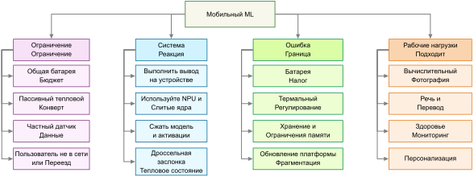
Инженерный расчёт 2.8: Аккумуляторный налог
Задача: рассмотрим развёртывание «работающего в реальном времени» фонового детектора объектов на смартфоне. Модель потребляет 2 W непрерывной мощности в активном состоянии. В телефоне установлен стандартный аккумулятор 15 Wh. Может ли эта функция работать весь день? Именно аккумуляторный налог превращает время автономной работы в ограничение энергетического бюджета мобильного машинного обучения.
Физика:
- Идеальное время работы:
= 7.5 hours - Реальность: пользователь ожидает, что телефон проработает 24 hours. Непрерывная работа одной этой функции в течение суток потребовала бы 320 percent суточного энергетического бюджета телефона.
Системный вывод: модель нельзя просто «развернуть». Более лёгкая модель, рабочий цикл с перерывами или и то и другое должны снизить потребление энергии, чтобы функция могла работать весь день.
Устойчивая производительность при нагреве оказывается значительно ниже пиковых значений.
Аккумуляторный налог — задача о бюджете, которую в принципе можно решить, снизив частоту работы модели или увеличив ёмкость аккумулятора. Тепловая стена — это физический потолок. Больший аккумулятор не поднимает максимальную устойчивую мощность, которую способен рассеять пассивный корпус; изменение рабочего цикла и программные меры могут лишь уменьшить тепловыделение. Устойчивая работа выше теплового бюджета вызывает троттлинг аппаратуры независимо от остатка энергии в аккумуляторе. Следовательно, эти два ограничения воздействуют на разные точки «железного закона»: аккумулятор ограничивает суммарное число операций на заряд (сумму
Инженерный расчёт 2.9: Тепловая стена
Задача: неоптимизированная модель компьютерного зрения потребляет 12 W в пике. Можно ли развернуть её на мобильном устройстве, или она упрётся в тепловую стену и мобильную стену мощности?
Сценарий: мобильная однокристальная система (SoC) допускает около 3 W при пассивном охлаждении. Предположим, что неоптимизированная модель разворачивается как есть. Типичный трассировочный график троттлинга для этой более тяжёлой модели состоит из трёх шагов:
- Рост температуры: при 12 W температура перехода SoC растёт примерно со скоростью 1 °C/s.
- Тепловое срабатывание: в течение 60 s аппаратура достигает точки теплового срабатывания (80 °C), запуская троттлинг на уровне ОС.
- Пропускная способность после троттлинга: модель с 100 FPS внезапно падает до 30 FPS, чтобы оставаться в пределах теплового бюджета.
Математика: предположим, что редизайн (более лёгкая архитектура с арифметикой INT8 вместо FP32) сокращает активную мощность для наглядности в 4×: 12 W ÷ 4 = 3 W, что приходится точно на потолок пассивного охлаждения 3 W без какого-либо запаса. Этот коэффициент — входной параметр сценария для всего редизайна. Квантизация сама по себе уменьшает хранение весов во столько же раз, но не сокращает мощность пропорционально, поскольку остаются энергия переключений и токи утечки вне арифметики.
Системный вывод: даже снижение мощности в 4× не создаёт теплового запаса; оно лишь достигает устойчивого предела. Оптимизация может опустить модель до теплового потолка, но не может поднять сам потолок.
Аккумулятор и тепло — два ограничения, которые мобильное развёртывание должно учитывать явно. Внутри них аппаратный лимит телефона определяет, какие модели могут работать и как часто.
7.1 Преимущества и ресурсные ограничения Mobile ML
Даже непрерывная ML-нагрузка мощностью 1 Вт — половина энергопотребления детектора из прикидочного расчёта 2.8 — сократила бы время работы смартфона в течение суток примерно до 9.2 hours–11.5 hours на батарее ёмкостью 15 Wh–22 Wh. Именно необходимость избежать такого расхода энергии определяет аппаратный профиль в строке «мобильные устройства» таблицы Таблица 4: гигабайты ОЗУ, нейронные процессоры с производительностью в десятки TOPS и 3–5 W устойчивой потребляемой мощности на системе-на-кристалле22, которая объединяет вычисления и память, чтобы минимизировать затраты энергии на перемещение данных. Ёмкость памяти по-прежнему ограничивает занимаемый моделью объём, а пропускная способность памяти — скорость перемещения весов и активаций, но именно общая батарея задаёт потолок, который пользователи замечают в первую очередь.
Мобильный уровень добавляет к тем выгодам, которыми обладают все локальные уровни, ещё две. Первая — аппаратная изоляция наиболее чувствительных входных данных: аппаратные анклавы на устройстве, такие как Secure Enclave от Apple, удерживают биометрическое сопоставление внутри выделенной подсистемы,23 хотя сила любой гарантии приватности по-прежнему зависит от полного дизайна системы и модели угроз. Вторая — персонализация: модели могут использовать сигналы с устройства и пользовательский контекст, не отправляя сырые данные куда-либо. Специализированные ML-фреймворки для работы на устройстве удерживают такой инференс в пределах времени отклика пользовательского интерфейса 5–50 ms.
Цена проявляется не только в джоулях, но и в трудозатратах. Пиковая пропускная способность NPU может заметно превышать то, что устройство способно поддерживать под длительной нагрузкой; неоднородность устройств требует нескольких вариантов модели; разработка размножается по платформам, а ревью в магазине приложений и поэтапный выпуск замедляют итерации по сравнению с сервисом, оператор которого полностью его контролирует.
7.2 Персональный ассистент и обработка медиа
Несколько коротких ML-конвейеров на одном телефоне должны делить один и тот же бюджет батареи и тепловыделения, и вычислительная фотография демонстрирует это ограничение наиболее наглядно. Современные флагманы обрабатывают каждый снимок через несколько ML-этапов: портретный режим использует оценку глубины и сегментацию, ночной режим выравнивает несколько кадров с ML-подавлением шума, а слияние HDR, суперразрешение и оптимизация сцены выполняются последовательно. Ограничивающее требование ложится на конвейер в целом, а не на отдельную модель: эти модели должны укладываться в бюджет мощности 3–5 W и завершаться в пределах воспринимаемой пользователем задержки спуска затвора, что требует аккуратного планирования между CPU, GPU и NPU, чтобы избежать троттлинга из-за нагрева.
Голосовые взаимодействия ограничены энергией постоянного прослушивания, поэтому работа распределяется по тому же SoC по уровням энергопотребления. Детектирование ключевого слова выполняется непрерывно на выделенном маломощном ядре, тогда как распознавание речи и предсказание клавиатуры задействуют более энергоёмкие нейронные уровни только при необходимости.
Мониторинг здоровья и дополненная реальность выводят мобильный ML на пределы устойчивой производительности. Носимые устройства вроде Apple Watch обрабатывают данные ЭКГ и акселерометра на самом устройстве, снижая затраты энергии радиомодуля на передачу, а AR-фреймворки должны уместить одновременную локализацию, трекинг рук и понимание сцены в бюджет кадра 16.7 ms при 60 FPS, не превышая устойчивый тепловой лимит. Эти приложения представляют потолок того, что могут поддерживать устройства на батарейном питании с пассивным охлаждением, и определяют границу, за которой одной мобильной оптимизацией уже не обойтись.
Приложения ниже этого потолка всё равно требуют моделей, спроектированных под устройство, поскольку команды не могут развернуть модели, обученные на десктопе, на мобильных или ограниченных периферийных устройствах без архитектурных изменений. Ограничение, с которым такая модель сталкивается первой, — не всегда тепловое. Десктопный конвейер ResNet-50 может требовать гигабайты с учётом активаций, батчей, буферов предобработки и накладных расходов среды исполнения, хотя одни лишь веса FP32 занимают около 102.2 MB. Эти веса помещаются в 512 MB ОЗУ представительного маломощного периферийного устройства, но при 8.2 GFLOP на инференс его процессор с производительностью 1 GFLOP/s тратит секунды на один инференс — это отказ по задержке, а не по ёмкости. Оптимизированные для десктопа модели могут также использовать операции, не поддерживаемые мобильным железом, предполагать числовые форматы, недоступные во встраиваемых системах, или требовать батчевую обработку, несовместимую с инференсом по одному образцу. Успешное развёртывание требует проектирования с учётом архитектуры с самого начала, поэтому семейства моделей, арифметические форматы и выбор реализации должны все соответствовать целевому устройству.
↪ Фреймворк, организующий прореживание, дистилляцию и квантизацию для укладки в бюджет памяти периферийных устройств, развивается в Вписывание в бюджет развёртывания.
Мобильный ML показывает, что полезный интеллект умещается в тепловой лимит 3–5 W при батарейном питании. Но смартфон всё ещё стоит сотни долларов, несёт гигабайты памяти и требует ежедневной зарядки, и никакая мобильная оптимизация не закрывает примерно 10,000-кратный разрыв в памяти до устройства, которое должно стоить доллары и работать без присмотра годами. Тот режим требует другого класса железа и алгоритмов.
8 TinyML: повсеместное сенсорное оснащение
Оснастить датчиками каждую паллету на складе, каждый трос висячего моста или каждый улей на пасеке — значит дать «глаза и уши» десяткам тысяч и миллионам физических объектов. При таком количестве каждое устройство должно стоить доллары, а не сотни долларов, и измеряться миллиметрами, а не сантиметрами. Смартфоны слишком дороги и слишком велики для этой роли; повсеместное сенсорное оснащение (ubiquitous sensing) в таком масштабе требует удельной стоимости менее десяти долларов.
TinyML завершает спектр развёртывания: малозатратный маломощный ML на глубоко ограниченных встраиваемых устройствах (Warden и Situnayake 2020 г.; Janapa Reddi и др. 2022 г.). Устройства ценой менее $10 и со средним потреблением менее одного милливатта24 при циклическом включении делают повсеместное25 сенсорное оснащение экономически практичным в большом масштабе. MLPerf Tiny и MCUNet показывают, как такие ограничения оцениваются и оптимизируются на практике (Banbury и др. 2021 г.; Lin и др. 2020 г.). Первый проверочный экран осуществимости для TinyML — ёмкость памяти: веса должны уместиться во flash, а рабочее состояние — в SRAM; но когда модель уже помещается, ограничивающим фактором проектирования становится энергопотребление. Это домен архетипа с ограничением по мощности, где цель оптимизации смещается с максимизации пропускной способности на минимизацию энергии на инференс. При циклическом исполнении модель детектирования ключевых слов, потребляющая около 10 μJ на инференс на специализированном маломощном аудиочипе, может работать годами от батарейки-таблетки, обменивая ёмкость модели на срок службы. Этот якорь — лучший случай; универсальный микроконтроллер, исполняющий ту же модель, тратит на инференс на порядки больше.
На плате разработки Arduino Nano 33 BLE Sense (Рисунок 9) бортовые микрофон, датчики движения и окружающей среды делят одну подложку с маломощным микроконтроллером, исполняющим квантизованные модели TensorFlow Lite Micro (David и др. 2021 г.). Плата иллюстрирует интеграцию; её полное энергопотребление зависит от датчиков, радиомодуля и цикла включения.
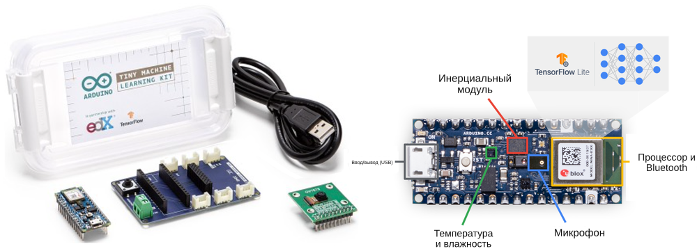
TinyML работает на микроконтроллерах (MCU),26 в которых отсутствует энергоёмкая инфраструктура обычных вычислений. Мобильные и периферийные процессоры полагаются на внешнюю динамическую память (DRAM), высокоскоростные шины памяти и среды исполнения операционных систем, потребляющие милливатты только на поддержание DRAM в самоперезаписи (self-refresh) и сотни милливатт, когда шина памяти активна. Многие микроконтроллеры объединяют процессорное ядро, энергонезависимый flash и статическую память (SRAM) на одном кремниевом кристалле, снижая зависимость от внешних шин памяти (Banbury и др. 2021 г.; Lin и др. 2020 г.; Janapa Reddi и др. 2022 г.). Устранение внекристальных сигнальных линий позволяет снизить среднюю мощность при циклическом исполнении ниже милливатта, а мощность спящего режима — до микроватт, хотя активный инференс на платах вроде ESP32-S3 всё же потребляет десятки–сотни милливатт. Интеграция — типовой, а не универсальный случай. Некоторые целевые платформы, включая варианты ESP32-S3, подключают внешний flash или дополнительную память и потому заново платят часть этой стоимости внекристальной сигнализации.
Внутрикристальная интеграция всё же накладывает жёсткий потолок внутренней памяти. Внутрикристальная SRAM физически ограничена площадью кремниевого кристалла: поскольку каждая ячейка SRAM требует шесть транзисторов (
На этом масштабе энергопотребление — второй вид бюджета. Распознавание ключевых слов — небольшая задача для маломощного аппаратного обеспечения, что помещает её в нижнюю часть диаграммы Рисунок 7.27 Его средняя мощность зависит от скважности работы (duty cycle) — доли времени, в течение которого устройство бодрствует и выполняет инференс, — а многолетняя работа от круглой батарейки требует, чтобы энергопотребление всего устройства укладывалось в бюджет батареи.28
Определение 2.5: TinyML
TinyML — это область машинного обучения для постоянно работающего сенсорного ввода, ограниченная памятью килобайтного масштаба и мощностью милливаттного масштаба.
- Значимость: Требуются модели, веса и код которых помещаются во flash-память, а активации и состояние среды исполнения — в кристалле SRAM; это обеспечивает непрерывный инференс при милливаттных энергетических бюджетах.
- Отличие: В отличие от мобильного ML, использующего многоваттные процессоры и полноценную ОС, TinyML работает на микроконтроллерах с bare-metal прошивкой или операционной системой реального времени.
- Типичная ошибка: Распространённое заблуждение состоит в том, что TinyML — это просто «маленькие модели». На деле именно объём памяти решает, поместится ли модель вообще; а когда модель помещается, TinyML оказывается режимом, ограниченным по энергии, где основной метрикой является энергия на инференс (микроджоули), а не только число параметров.
Это определение переосмысляет железный закон систем машинного обучения. В терминах Уравнение 5 TinyML накладывает физическое предварительное условие по ёмкости памяти, которое не отражает время исполнения: занимаемый весами объём
Та же карта с четырьмя ветвями применима к нижней части спектра (Рисунок 10). Милливатные бюджеты и килобайтные памяти благоприятствуют низкоразрядному исполнению и сну между циклами работы, а граница отказа смещается с задержки к потере точности из-за сжатия и рискованным обновлениям прошивки.
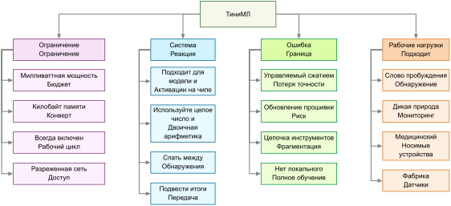
8.1 Преимущества TinyML и операционные компромиссы
Именно отказ от постоянного радиоканала и прикладного процессора позволяет устройствам TinyML уменьшиться от умещающихся на ладони отладочных наборов до миллиметровых чипов29 стоимостью в единицы долларов, работающих месяцами или годами от круглой батарейки или собранной энергии окружающей среды. Та же аппаратная аскеза, однако, лишает запаса памяти, необходимого для обучения моделей на самом устройстве,30 поэтому модели обучаются в другом месте и развёртываются с помощью специализированных алгоритмов, агрессивного сжатия моделей и тесной совместной проработки аппаратного и программного обеспечения.
Компромиссы столь же характерны. Микроконтроллеры обычно предоставляют от
Эти пределы порождают и проблемы жизненного цикла и надёжности. Устройство с рекуперацией энергии может укладываться в долгосрочный средний энергетический бюджет, но отказать, когда запасённая энергия исчерпается до следующей рекуперации. Поэтому его скважность работы должна учитывать и энергию на инференс, и тайминг доступной энергии. Качество модели также может страдать от агрессивной квантизации и прореживания: преобразование 32-битных весов с плавающей запятой в 8-битные целые (INT8) экономит память, но может ухудшить точность и устойчивость на лежащих вне распределения сенсорных входах. Гибкость после развёртывания также резко ограничена: модели часто упаковываются вместе с прошивкой, и полевые обновления должны учитывать ограниченный объём хранилища, прерываемые передачи и безопасный откат. Фрагментация экосистемы31 среди производителей микроконтроллеров и ML-фреймворков создаёт дополнительные накладные расходы и проблемы переносимости.
8.2 Мониторинг окружающей среды и здоровья
В потребительских устройствах постоянно работающее распознавание ключевых слов использует тот же милливатный бюджет как непрерывный маломощный фильтр, который будит более дорогие прикладные процессоры лишь при услышанной триггерной фразе.32 В мониторинге окружающей среды и здоровья тот же паттерн локальной фильтрации управляет датчиками, развёрнутыми там, где юнит-экономика и физическая изоляция полностью исключают более высокие уровни. На обширных сельскохозяйственных полях первым ограничением выступает разреженная и дорогая связность; FarmBeats использовал датчики, камеры, дроны и обработку на локальных шлюзах, чтобы сократить перемещение сырых данных в точном земледелии (Vasisht и др. 2017 г.), а TinyML опускает эту фильтрацию до отдельных сенсорных узлов, работающих при милливатных бюджетах.
Охрана дикой природы иллюстрирует арифметику восходящего канала на показательном случае. Работающие от солнечных батарей акустические датчики определяют виды прямо на устройстве и передают периодические сводки об обнаружениях вместо сырого аудио, сокращая восходящий трафик с 4.3 GB/day до 400 KB/day — сокращение в 10,750×, которое экономит энергию в автономных развёртываниях. Медицинские носимые устройства применяют ту же логику к физиологическому мониторингу, где время работы ограничено потреблением датчиков, мощностью радиомодуля, скважностью и энергией сна, а не только моделью.
Все четыре парадигмы лежат на одном континууме, ограниченном скоростью света, рассеиванием тепла и сигналингом памяти, и реальное приложение обычно упирается сразу в несколько этих пределов. Выбор между парадигмами, следовательно, означает сопоставление ограничений приложения со всеми ими одновременно.
9 Выбор парадигмы развёртывания
Архитектор, выбирающий, где исполнять ML-функцию, редко оптимизирует только одно измерение. Правило конфиденциальности может запрещать обработку в облаке, бюджет задержки (latency) — удалённый инференс, занимаемый объём памяти — превышать возможности мобильного устройства, а целевые показатели стоимости — исключать постоянно включенное периферийное оборудование (edge). Облако, edge, мобильные устройства и TinyML — это рабочие оболочки для таких конфликтов, поэтому выбор между ними требует единой системы сравнения и структурированного процесса принятия решений.
9.1 Оценка эксплуатационных компромиссов между уровнями
Модель, комфортно укладывающаяся в бюджеты задержки, энергии и памяти некоторого уровня, всё равно может потерпеть неудачу в продакшене, если команда не может доставлять в неё обновления, если обрыв интернет-соединения останавливает сервис или если ежемесячные счета за облако превышают доход продукта. Выбор уровня развёртывания требует взвешивания компромиссов между задержкой и пропускной способностью по физическим и операционным бюджетам одновременно. Ресурсные оболочки уже представлены: Таблица 1 даёт режим задержки, энергии и памяти для каждого подхода, а Таблица 4 привязывает их к конкретным платформам. Чего эти таблицы не показывают, так это операционных измерений, которые определяют многие реальные развёртывания: как система масштабируется, что она раскрывает наружу, нужна ли ей сеть, сколько она стоит и насколько сложно её создать и выпустить. Таблица 9 сопоставляет четыре подхода по восьми операционным измерениям, покрывающим эти вопросы.
| Аспект | Облачной ML | Edge ML | Мобильный ML | TinyML |
|---|---|---|---|---|
| Масштабируемость | Высокая (ограничена мощностями провайдера) | Хорошая (ограничена периферийным оборудованием) | Умеренная (масштабирование на каждое устройство) | Ограниченная (фиксированное оборудование) |
| Раскрытие данных | Удалённая обработка расширяет поверхность атаки | Локальная обработка сокращает передачу | Обработка на устройстве сокращает передачу | Сырые данные могут оставаться локально |
| Требуемая связность | Требуется для удалённых запросов | Прерывистая | Опциональная | Не требуется |
| Оффлайн-возможности | Отсутствуют | Хорошие | Отличные | Полные |
| Обработка в реальном времени | Сеть и исполнение должны укладываться в дедлайн | Локальное исполнение должно укладываться в дедлайн | Дедлайн и лимиты устойчивой потребляемой мощности | Дедлайн и лимиты объёма памяти |
| Стоимостной якорь | Счёт за сервис ($1000s+/месяц) | Покупка оборудования ($100s–$1,000s за устройство) | Покупка устройства ($200–$1000+; часто принадлежит пользователю) | Покупка оборудования ($1–$10 за устройство) |
| Сложность разработки | Высокая (нужна экспертиза в облаке) | Умеренно-высокая (edge+сети) | Умеренная (мобильные SDK) | Высокая (экспертиза во встраиваемых системах) |
| Скорость развёртывания | Высокая | Умеренная | Высокая | Низкая |
Ни один столбец Таблица 9 не выигрывает по всем строкам, поскольку каждый подход покупает свои преимущества ценой издержек в другом месте. Например, удалённая обработка расширяет поверхность сетевых атак и требует шифрования при передаче и строгой изоляции между арендаторами; локальная обработка оставляет сырые данные на устройстве, снижая сетевое раскрытие, но не устраняя риск физического вмешательства. Архетипы рабочих нагрузок из Глава 3 напрямую соотносятся с этими границами: каждый архетип тяготеет к подходам, снимающим его основное узкое место.
Каждый подход также переносит инженерную сложность в другую подсистему. Облачные развёртывания требуют экспертизы в мультитенантных сетях и динамическом управлении затратами, тогда как развёртывания на edge и TinyML обменивают эти облачные заботы на локальные тепловые и памятные лимиты, а также распределённые обновления и обслуживание на месте. Мобильные развёртывания занимают промежуточное положение, работая на оборудовании, принадлежащем пользователю, что позволяет избежать затрат на покупку инфраструктуры ценой платформенно-специфичных драйверов, ограничений фоновых задач операционной системы и общих энергетических бюджетов. Ни одна из четырёх категорий не даёт независимого от рабочей нагрузки рейтинга задержки или энергии.
Распространённая архитектурная ошибка — выбирать цель развёртывания только по точности модели, рассматривая аппаратные ограничения как детали последующей оптимизации. Не квантованная модель, показывающая 99 процентов точности в оффлайн-оценке, становится нежизнеспособной, если её занимаемый объём памяти вызывает подкачку на мобильном оборудовании или если непрерывный инференс приводит к троттлингу из-за нагрева (thermal throttling) в течение секунд. Физические инварианты (ёмкость памяти, пределы тепловыделения и задержка передачи по сети) должны служить критериями раннего отбора ещё до начала разработки модели, отсекая нежизнеспособные цели развёртывания до того, как будут потрачены ресурсы на обучение.
9.2 Четыре предварительные проверки при выборе уровня
Отсечение нежизнеспособных целей начинается на шаг раньше выбора между облаком и микроконтроллером. Перед четырьмя проверками уровня, которые следуют далее, инженер должен убедиться, что задача вообще требует машинного обучения. Глубокие нейронные сети несут тяжёлое бремя сопровождения, которого лишён детерминированный код, и набор эвристических правил на пятьдесят строк часто может решить задачу за крошечную долю эксплуатационных затрат. Дополнительные инженерные и эксплуатационные затраты, которые обучаемая система несёт по сравнению с таким базовым уровнем, — это её налог на сложность.
Системный взгляд 2.3: Налог на сложность
Рассмотрим задачу классификации, решаемую либо детерминированными эвристическими правилами, либо конвейером глубокого обучения. Эвристика требует пятидесяти строк кода, имеет почти нулевую стоимость вычислений, требует около одного часа в месяц на обновление правил и отказывает так, что инженеры могут прочитать причину в коде. ML-система может потребовать лишь пятидесяти строк определения модели, но, как отметил Sculley и др. (2015 г.) о продакшен-ML в целом, она вводит примерно 2,000 lines сопутствующей инфраструктуры для приёма признаков, журналирования телеметрии, мониторинга дрейфа и управления драйверами GPU. Она также требует 40 hours в месяц на диагностику дрейфа данных и сопровождение конвейеров.
ML-модель, повышающая точность с 90 percent до 95 percent при умножении операционного сопровождения, скажем, на 40×, требует экономического сравнения. Одни лишь точность и соотношение затрат на сопровождение не устанавливают отдачу; ценность избегнутых ошибок должна оправдать дополнительные инженерные затраты. Когда постоянные затраты на сопровождение превышают ценность маргинальных статистических выигрышей, детерминированное программное обеспечение остаётся правильным системным выбором.
↪ Сопоставление задачи с существующим базовым уровнем и сохранение этого базового уровня, когда ожидаемая выгода не оправдывает дополнительные затраты, рассматриваются в Этап 1: Определение проблемы.
Когда этот налог на сложность перевешивает операционную ценность улучшенных статистических предсказаний, ML-развёртывание обходится системе дороже, чем приносит. Однако, как только обучаемая система обоснована, выбор подхода опирается на многоуровневую структуру принятия решений, упорядоченную по тому, насколько быстро ограничение делает архитектуру непригодной. Иерархия отбора оценивает четыре последовательные проверки: регуляторную конфиденциальность, физическую задержку, локальные ресурсы и экономику жизненного цикла. Последняя проверка сравнивает сопоставимые бюджеты жизненного цикла: затраты, подсчитанные за один и тот же срок службы, при одной и той же цели доступности и одном и том же охвате расходов, поскольку сравнение, которое считает больше для одного варианта, чем для другого, благоприятствует варианту, для которого оно недоучитывает затраты. Конфиденциальность возглавляет порядок, потому что юридический запрет на перемещение данных устраняет вариант до того, как что-либо будет измерено, тогда как проверки задержки и ресурсов требуют чисел. Каждая проверка передаёт следующей только прошедших, так что последовательность отбора действует как последовательные фильтры над множеством кандидатов (Рисунок 11).
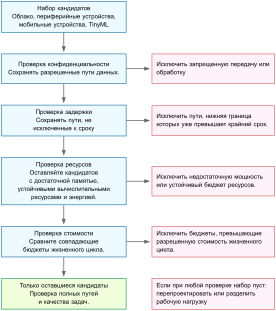
Блок-схема проносит множество оставшихся кандидатов через все четыре проверки. Уровень, исключённый на одной проверке, остаётся исключённым на каждой последующей. Если регуляторные правила или суверенитет данных запрещают передачу с устройства, проверка конфиденциальности исключает удалённую облачную обработку, и она остаётся исключённой на проверке ресурсов, сколько бы вычислений та ни предлагала. Если нижняя граница сетевого цикла «туда-обратно» превышает дедлайн, дополнительные удалённые вычисления не восстановят этот путь. Проверка ресурсов спрашивает, может ли уровень исполнить модель, всё ещё удовлетворяющую требованию качества задачи, поэтому вариант, ужатый под меньший уровень, проваливает её, когда его точность падает ниже этого требования. Стоимость сравнивает только прошедших, а пустое множество требует изменить рабочую нагрузку или разделить её между уровнями. Прохождение проверки по нижней границе задержки всё ещё требует валидации полного пути. При аварийном торможении в автомобиле проверка задержки отсеивает варианты ещё до того, как будут рассмотрены вычислительная мощность или стоимость.
Пример 2.1: Аварийное торможение автономного транспортного средства
Сценарий: Система зрения автономного транспортного средства выполняет детектирование пешеходов в реальном времени для аварийного торможения при жёстком бюджете сквозной задержки 100 ms.
Диагноз: При 100 km/h транспортное средство покрывает 2.8 m за бюджет 100 ms, так что каждая миллисекунда задержки — это дистанция, пройденная до начала торможения. Сценарий предполагает 50–150 ms задержки сетевого цикла «туда-обратно» при выгрузке в облако, что в лучшем случае поглощает половину бюджета, а в худшем — больше всего бюджета ещё до того, как начнётся хоть какое-то детектирование. Локальное детектирование объектов на автомобильном периферийном ускорителе занимает 10–30 мс; при 10 GFLOP на кадр и 30 FPS этот ускоритель должен поддерживать 300 GFLOP/s.
Системный урок: Заявленный диапазон сетевой задержки не может гарантировать дедлайн, поэтому проверка задержки исключает этот облачный путь. Локальные кандидаты по-прежнему подлежат проверке ресурсов: детектор пешеходов должен уместиться в память и поддерживать заявленную частоту кадров в пределах своего энергетического бюджета. Автомобильный периферийный ускоритель остаётся кандидатом при этих допущениях; его полный путь от сенсоров до торможения всё ещё требует валидации. Облачные соединения могут поддерживать оффлайн-обучение и телеметрию, не возвращаясь в путь аварийного решения.
Завершённое решение о размещении требует подтверждений по пережившим отбора вариантам, а также оснований для отклонения остальных. На заводской линии контроля четыре проверки сначала устраняют удалённые и слабые с точки зрения питания уровни, а затем выбирают между двумя осуществимыми краевыми вариантами при сопоставимой стоимости жизненного цикла.
Пример 2.2: Завершение решения о размещении
Задача: Стационарная заводская камера требует инспекции с 20 FPS и предельным временем от сенсора до решения 100 ms. Исходные изображения должны оставаться на территории предприятия. Какое осуществимое развёртывание имеет наименьшую сопоставимую стоимость жизненного цикла при следующих гипотетических данных?
Предоставленные данные: Базовый вариант на основе правил не проходит заданный критерий по пропускам дефектов, тогда как обученный детектор удовлетворяет и критерию пропущенных дефектов, и критерию ложных срабатываний на представительных данных контроля. Предложенные варианты на мобильной платформе и микроконтроллере не удовлетворяют тому же требованию к качеству, что отсеивает их ещё на проверке ресурсов. Краевые кандидаты A и B сохраняют проверенный детектор и предобработку. Оба имеют полный пиковый рабочий набор 2 GB при доступных 4 GB, и каждый должен укладываться в устойчивый бюджет энергопотребления системы 25 W.
При заданных пиковых нагрузках и тепловых условиях предоставленные границы сквозной задержки составляют 80 ms для A и 40 ms для B, включая захват данных, предобработку, ожидание в очереди, инференс и решение о контроле. Их устойчивые скорости — 25 FPS и 40 FPS при 10 W и 20 W. Оба удовлетворяют одинаковым требованиям доступности и восстановления. Годовые бюджеты за одинаковый срок службы, включая аппаратное обеспечение, питание, установку, обслуживание и обеспечение восстановления, составляют $2,400 для A и $3,600 для B. Эти предоставленные границы и бюджеты определяют учебный сценарий, а не бенчмарки названных продуктов.
Результат: Выбирается краевой кандидат A. Требования приватности исключают выгрузку исходных изображений в облако, качество задачи исключает предложенные более компактные варианты, а оба краевых пути удовлетворяют требованиям к времени, пропускной способности, памяти и энергопотреблению. У A ниже сопоставимая стоимость. Более быстрый отклик B не даёт требуемой выгоды в рамках этой спецификации; более жёсткий предельный срок мог бы изменить выбор.
Системный урок: Окончательный выбор следует из качества задачи и сквозных данных, а не из ярлыка уровня или пиковой скорости вычислений. Решение остаётся действительным в пределах предоставленных условий эксплуатации; изменение входного потока, детектора, нагрузки или теплового окружения требует пересмотра соответствующих проверок.
Завершённое сравнение зависит не только от производительности исполнения, но и от эксплуатационной обслуживаемости. Его сопоставимые бюджеты включают обязательства, которые сравнение только по оборудованию опустило бы. Развёртывание модели на тысячах краевых узлов или миллионах микроконтроллеров вносит устойчивые накладные расходы жизненного цикла: автоматизированные обновления прошивок, внеполосная телеметрия, распределённый мониторинг дрейфа данных и восстановление при отказах оборудования. Организация, оснащённая для облачных операций, может не иметь встраиваемых инструментальных цепочек и инфраструктуры физических испытаний, необходимых для масштабной поддержки краевых или TinyML-целевых платформ.
Контрольная точка 2.2: Проектирование системы
Сначала обоснуйте обучаемую систему относительно более простых базовых вариантов; затем проверьте кандидатов на развёртывание на соответствие физическим и эксплуатационным ограничениям.
Проверочные вопросы
Рамка принятия решений проверяет уровни-кандидаты на физическую осуществимость, а затем сравнивает их эксплуатационные затраты. Если ни один отдельный уровень не удовлетворяет требованиям всего конвейера, следующий вопрос — какие стадии могут выполняться раздельно и что должно пересекать границы между ними.
10 Гибридные архитектуры
Голосовой интерфейс может использовать микроконтроллер для постоянного прослушивания слова-активатора, телефон для транскрибирования речи и облачные серверы для интерпретации запросов, требующих более крупной модели. У каждой стадии своя задача и свой бюджет ресурсов. Отправка каждого аудиосэмпла в облако добавила бы затраты на связь и радиомодуль; поручение всех стадий микроконтроллеру превысило бы его вычислительные и мнемонические возможности. Гибридные архитектуры разделяют конвейер по уровням так, чтобы каждая стадия удовлетворяла своим требованиям (Kang и др. 2017 г.). Экономика двигает это разделение не меньше, чем задержка: полная обработка голосовых взаимодействий миллиардов устройств в облаке упирается одновременно в экономический и в инфраструктурный потолок, и «стена голосового ассистента» присваивает каждому из них число.
Инженерный расчёт 2.10: Стена голосового ассистента
Задача: В этом иллюстративном сценарии ёмкости 1B устройств голосового ассистента (смартфоны, умные колонки, наушники) каждое выдаёт 20 queries/day после слова-активатора. Обнаружение самого слова-активатора в облаке потребовало бы непрерывной потоковой передачи аудио с каждого микрофона. Какую нагрузку наложило бы обнаружение на стороне облака и какая нагрузка остаётся в облаке после переноса обнаружения на устройство?
Обнаружение на стороне облака: Путь постоянного прослушивания, который устраняет локальное обнаружение.
- Потоковая передача аудио: Каждое устройство непрерывно передаёт аудио (16 kHz, 16-бит), около 32 KB/s каждое. Суммарно по 1 миллиарда устройств это 32 TB/s, и каждый поток требовал бы собственного непрерывно работающего детектора.
- Стоимость облака: ~$0.50/device/year
1B устройств = $500,000,000/year. Экономически неприемлемо при этих допущениях для бесплатной функции. - Альтернатива TinyML: 0.1–1 mW локального обнаружения слова-активатора, <$0.01/device/year. Если каждый запрос после активации выгружает около 5 s аудио, локальное обнаружение сокращает покидающее устройство аудио примерно в 860×.
Остаточная облачная нагрузка: Запросы после активации, которые гибридная схема всё ещё обслуживает в облаке. Даже с локальной фильтрацией слов-активаторов остаточный объём запросов (1 миллиарда устройств, генерирующих 20B queries/day при ~200 ms на запрос) всё ещё требует существенных централизованных мощностей ускорителей (~1.1 million GPU-часов в день).
Пять параметров определяют требуемую ёмкость кластера:
- Объём запросов: 1 миллиарда устройств
20 queries/day = 20B queries/day. - Потребность в GPU: Каждый запрос требует ~200 ms времени GPU. Итого: 1.1 million GPU-часов/день.
- Ёмкость сценария: Эквивалент дата-центра, оснащённый 10,000 GPUs, обеспечивает 240,000 GPU-часов/день.
- Средняя потребность: ~4.6 выделенных дата-центров только для голосового инференса.
- Пиковая реальность: Запросы группируются в часы бодрствования (~4.5× пик/среднее), что требует ~20.8 дата-центров в пике.
Системный вывод: Локальное обнаружение сокращает выгрузку каждого устройства до его запросов после активации — 20 queries/day продолжительностью в несколько секунд. Остаточная нагрузка после активации всё ещё велика — десятки дата-центров в пике, — но она ограничена тем, что пользователи реально спрашивают. Это нагрузка, которую гибридная схема сознательно оставляет в облаке, чтобы использовать более крупную языковую модель, чем способно поддержать локальное устройство.
Разбиение голосового конвейера на работающий на устройстве фильтр слов-активаторов и облачную языковую модель снимает одновременно ограничение энергии клиента и ограничение ёмкости дата-центра. Разделение также создаёт инженерную работу: решать, какие данные пересекают каждую границу, и поддерживать согласованность участвующих стадий. Три паттерна интеграции упорядочивают эти решения.
10.1 Разделение работы по уровням: три паттерна интеграции
Когда один уровень не может удовлетворить каждую стадию МЛ-конвейера, инженеры разделяют конвейер по одному из трёх физических разрезов: разделение обучения и обслуживания (train-serve split), иерархическая обработка или прогрессивное развёртывание. Выбор паттерна — решение по «железному закону», потому что каждая стадия вычислений должна исполняться там, где её лимитирующий член (ёмкость пропускной способности
При разделении обучения и обслуживания (train-serve split) обучение выполняется в централизованных дата-центрах, а инференс — локально на краевых, мобильных или встраиваемых устройствах. Обучение должно хранить промежуточные результаты и информацию, используемую для вычисления и применения обновлений параметров, в дополнение к весам модели. При распространённой 16-битной схеме обучения веса и дополнительные значения, которые обучение хранит для каждого веса, чтобы вычислять его обновления, вместе занимают около 16 bytes на параметр (Rajbhandari и др. 2020 г.). Это примерно 8× от 2 bytes на параметр, необходимых 16-битным весам инференса, ещё до учёта каких-либо пакетных активаций (Управление памятью развивает этот учёт). Инференс использует обученные веса для вычисления предсказаний, иногда через многократные проходы, как при генерации токен за токеном, и должен удовлетворять локальным ограничениям задержки и приватности. Амортизация составляет основу экономики этого разделения: высокие фиксированные затраты на обучение распределяются на миллионы запросов прямого прохода, обслуживаемых локально без повторяющихся затрат на передачу по сети.33
Определение 2.6: Гибридное машинное обучение (Hybrid ML)
Гибридное машинное обучение — это стратегия развёртывания, при которой конвейер машинного обучения распределяется по двум или более уровням развёртывания, причём каждый этап назначается уровню с учётом его ограничений по задержке, вычислениям, данным и эксплуатации.
- Значение: гибридные архитектуры используют аддитивную структуру железного закона: периферийный уровень способен снизить
для чувствительных ко времени этапов предобработки и инференса, тогда как облачный уровень обеспечивает , необходимый для обучения, дообучения и тяжёлого батчевого инференса. Разделение следует инварианту локальности данных: сравнить полные локальный и удалённый пути каждого этапа, отклонить пути, не укладывающиеся в дедлайн обслуживания, и выбрать среди выполнимых альтернатив. - Отличие: в отличие от развёртывания только в облаке (принимающего плату за расстояние для всех этапов) или только на периферии (принимающего ограниченный
для всех этапов), гибридное машинное обучение назначает каждый этап конвейера тому уровню, где его лимитирующий член железного закона минимален. - Типичная ошибка: распространено заблуждение, что гибридное машинное обучение — это просто «две модели». На самом деле участвующие уровни должны разделять синхронизированное состояние (определения признаков, версии моделей и логику предобработки), чтобы их пути давали согласованные результаты. Без такой синхронизации на границах уровней возникает перекос обучения и обслуживания (training-serving skew), при котором модель получает входные данные, подготовленные иначе, чем те, на которых она обучалась (Согласованность обучения и обслуживания).
При иерархической обработке вычисления каскадом проходят по уровням, пошагово фильтруя и обобщая данные так, чтобы объём передачи соответствовал пропускной способности доступных каналов связи. Потоки сырых данных с камер или микрофонов на краю сети нередко превышают пропускную способность восходящего канала глобальной сети (WAN); непрерывная передача несжатой телеметрии в центр обработки данных насыщает сетевые каналы и расходует энергию радиомодулей. Чтобы предотвратить насыщение сети, ранние уровни фильтруют данные локально. Микроконтроллеры TinyML исполняют маломощные детекторы аномалий, периферийные шлюзы агрегируют и сопоставляют временные признаки от множества датчиков, а облачные кластеры принимают только аномальные события или агрегированные сводки для глобальной аналитики. Голосовой интерфейс, распределяющий обнаружение ключевого слова, акустическую обработку и понимание языка по уровням, применяет тот же каскад к разным задачам.
При обслуживании инференса иерархическая обработка часто принимает форму каскада по уверенности (Teerapittayanon и др. 2017 г.). Компактная низколатентная модель на локальном устройстве первой оценивает вход. Если уверенность предсказания превышает калиброванный порог уверенности, устройство немедленно возвращает результат, полностью минуя сеть. Только неоднозначные или низкоуверенные входы вызывают передачу полезной нагрузки через WAN более крупной облачной модели. Каскад стремится к более низкой медианной задержке при требуемом качестве задачи, однако уверенные локальные ошибки могут миновать эскалацию. Репрезентативная оценка должна установить точность маршрутизированной системы, стоимость ошибок и частоту эскалаций до принятия этого компромисса.
При прогрессивном развёртывании инженерная команда порождает семейство специализированных вариантов модели из единой архитектуры или обучающего корпуса, адаптируя каждый вариант под объём памяти, соотношение вычислений и пропускной способности и тепловые ограничения конкретного уровня. Вместо того чтобы навязывать одну модель каждому устройству, разработчики создают артефакты для отдельных уровней и оценивают, какое качество теряется или сохраняется при снижении требований к ресурсам. Механизмы сжатия рассматриваются далее; решение о размещении здесь зависит лишь от того, удовлетворяет ли каждый артефакт ограничениям своей задачи и оборудования. Для общей задачи классификации изображений периферийный сервер и телефон могут использовать разных представителей семейства моделей, каждый из которых оценивается по одним и тем же требованиям задачи и собственному бюджету ресурсов.
Когда доступны три паттерна интеграции, выбор превращается в задачу сопоставления ограничений: выбрать тот паттерн, чей профиль компромиссов соответствует доминирующему узкому месту системы, взвесив условия в пользу каждого паттерна против условий, его дисквалифицирующих (Таблица 10).
| Паттерн | Компромисс | Выбирать, когда | Избегать, когда |
|---|---|---|---|
| Разделение обучения и обслуживания | Стоимость обучения против задержки инференса | Обучение требует больше ресурсов, чем инференс; обучающие данные могут покидать устройство обслуживания | Локальная адаптация не может ждать удалённого обучения и доставки модели |
| Иерархическая обработка | Локальная автономия против глобальной оптимизации | Объём данных превышает пропускную способность передачи; решения нужны на нескольких временных масштабах | Вся обработка может происходить на одном уровне; сеть надёжна и быстра |
| Прогрессивное развёртывание | Качество модели против охвата развёртывания | Та же модель нужна на нескольких уровнях возможностей; требуется плавная деградация | Модель не может быть осмысленно сжата; единственная цель развёртывания |
Промышленные развёртывания редко реализуют эти паттерны изолированно; сложные системы комбинируют их на разных фазах конвейера. Автономный автомобиль, например, сочетает прогрессивное развёртывание, чтобы вписать специализированные визуальные магистральные сети в бортовой вычислительный лимит. Он использует иерархическую обработку, чтобы разрешать выбор между немедленным миллисекундным экстренным торможением на локальном оборудовании и траекторным планированием за секунды. Он также применяет разделение обучения и обслуживания, загружая аномальные фрагменты поездок в облачные кластеры для переобучения на уровне автопарка. Подходы к распределённому обучению с сохранением приватности расширяют эту композицию дальше, когда сырые обучающие данные не могут покинуть клиентские устройства из-за регуляторных требований или соображений приватности. В федеративном обучении (McMahan и др. 2017 г.), например, каждое устройство обучается на своих данных и отправляет в облако только обновления модели для агрегирования.
10.2 Как гибридные уровни взаимодействуют в промышленной эксплуатации
Если аудиопрепроцессор телефона обновляет константы нормализации, тогда как облачная модель транскрипции ожидает прежнего масштабирования, или если смарт-часы и телефон расходятся во мнении о том, какие метки активности активны, гибридный конвейер незаметно ломается на границе уровней. Поддержание нескольких уровней исполнения как единой системы требует пяти явных каналов связи (Рисунок 12). Скомпилированные артефакты моделей развёртываются сверху вниз — от облачных обучающих кластеров к периферийным, мобильным и TinyML-движкам инференса, тогда как потоки сырых данных с датчиков и отфильтрованная телеметрия распространяются снизу вверх к облачной аналитике. Между соседними локальными уровнями устройства пересылают промежуточные результаты инференса и выгружают более тяжёлые запросы через ассистивные передачи (assist handoffs), а непрерывная синхронизация состояния поддерживает согласованность определений признаков, констант предобработки и версий моделей через каждую границу.
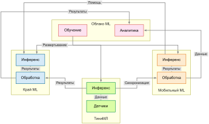
В промышленных, сельскохозяйственных и носимых доменах, представленных ранее в главе, промышленные системы размещают каждую границу уровней там, где одномуровневое развёртывание упирается в физический предел:
- Промышленное обнаружение дефектов: сборочные линии с высоким темпом циклов требуют детерминированного визуального контроля за менее чем 10 ms. Потоковая передача кадров камеры высокого разрешения через WAN в центр обработки данных нарушает дедлайны контроля и исчерпывает пропускную способность заводского восходящего канала. Система применяет разделение обучения и обслуживания: централизованная облачная инфраструктура обучает ёмкие визуальные модели на исторических базах дефектов, затем компилирует и квантизирует веса для среды исполнения на периферийных серверах цеха и встроенных умных камерах, которые выполняют инференс локально, без зависимости от внешней сети. Полный локальный конвейер — включая захват кадров, предобработку и инференс — всё же должен быть валидирован под ожидаемой нагрузкой.
- Сельскохозяйственный мониторинг: развёрнутые на сотнях гектаров удалённые датчики почвы работают от батареек-таблеток или малых солнечных батарей и связываются через маломощные широкодиапазонные радиоканалы вроде LoRa, которые переносят мало данных и тратят много энергии на бит. Непрерывная потоковая передача телеметрии влажности и температуры исчерпала бы запас батареи за считанные дни. Поэтому иерархическая обработка оставляет высокочастотный отбор проб и базовое обнаружение аномалий на микроконтроллерах TinyML с бюджетом мощности менее милливатта. Локальные периферийные шлюзы агрегируют измерения по кластерам датчиков и отправляют лишь сжатые сводки уровня поля по сотовому бэкхолу на облачные серверы, планирующие орошение в масштабе всей фермы.
- Носимый фитнес-трекинг: смарт-часы с аккумулятором должны удерживать всегда активный путь сенсоров в среднем ниже
, чтобы сохранить заряд батареи. Система использует иерархическую обработку. Лёгкие целочисленные ядра исполняются на встроенном микроконтроллере, отслеживая движение в реальном времени и обнаруживая пороги пульса. Промежуточные биометрические данные синхронизируются по Bluetooth Low Energy (BLE) на сопряжённый смартфон, который с помощью мобильных нейронных движков и гигабайтов DRAM классифицирует сложные паттерны активности. Наконец, смартфон передаёт периодические сжатые сводки по Wi-Fi или сотовым сетям в облачную инфраструктуру для продольного моделирования здоровья.
Контрольная точка 2.3: Паттерны гибридного ML
Гибридные архитектуры работают, когда работа разделяется по уровням, а не когда один и тот же конвейер копируется повсюду.
Паттерны интеграции
Проверки разумности проектирования
Разделение рабочей нагрузки по уровням работает потому, что каждый этап по-прежнему подчиняется одним и тем же физическим законам и программным абстракциям. Исполняется ли этап на микроконтроллере с батарейкой-таблеткой или в мегаваттном облачном блоке, он подчиняется тем же членам железного закона и сопровождается теми же инженерными основами.
11 Что общего у всех уровней
Квантизация весов из 32-битных чисел с плавающей запятой в 8-битные целые сокращает объём данных, читаемых из флеш-памяти и SRAM на микроконтроллере мощностью в милливатты, по той же физической причине, по которой она сокращает трафик HBM при авторегрессионном декодировании в облачном кластере, потребляющем мегаватты. Хотя четыре уровня развёртывания различаются на порядки по доступной энергии, объёму памяти и вычислительной пропускной способности, они опираются на общие системные основы: каждый уровень перемещает данные через конвейер, управляет фиксированным бюджетом вычислений, памяти, энергии и пропускной способности сети и отображает модели на аппаратное обеспечение через программную архитектуру. На этих трёх общих основах покоятся одни и те же сквозные вопросы эффективности, мониторинга и надёжной инженерии (Рисунок 13).
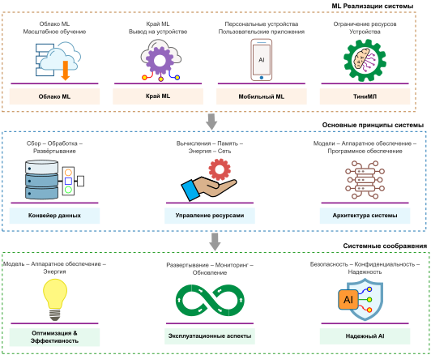
Эта сходимость позволяет одному набору методов обслуживать все уровни и все этапы гибридной системы, поскольку оптимизации, нацеленные на одни и те же физические узкие места, переносятся между масштабами аппаратного обеспечения. Методы, сокращающие перемещение данных — ту стоимость, которую накладывает «стена памяти», — полезны как встраиваемому микроконтроллеру, так и ускорителю масштаба серверного склада. Числовые представления меньшей разрядности (такие как FP8, INT8 и INT4, рассматриваемые в Числовая точность: как меняется хранение значений) сокращают объём хранимых и перемещаемых байтов как на локальных устройствах, так и в облачных кластерах. Они повышают арифметическую пропускную способность только там, где трак данных имеет соответствующий путь низкой разрядности (Компромиссы точности); качество предсказаний и полный объём трафика памяти по-прежнему определяют полезный выигрыш. Слияние ядер (kernel fusion) — выполнение цепочки операций за один проход, при котором промежуточные результаты остаются на кристалле, как объясняется в Барьер памяти и слияние ядер, — сокращает трафик за пределами кристалла на мобильных SoC и трафик HBM при облачном авторегрессионном декодировании. Разбиение модели на части, исполняемые на разных процессорах, распределяет работу между CPU, GPU и блоками нейронной обработки мобильной SoC точно так же, как оно распределяет работу между облачными воркерами.
Общая системная основа простирается и на инженерию данных, сжатие моделей и операционные жизненные циклы. Поэтому одни и те же уязвимости повторяются на каждом уровне, а именно дрейф распределения данных, устаревание модели и деградация телеметрии, и они требуют единообразного мониторинга независимо от того, где исполняется модель. За дрейфом нужен самый пристальный контроль, поскольку это скрытая деградация из Когда МЛ-системы выходят из строя незаметно (Уравнение (1)), не поднимающая никакой инфраструктурной тревоги; Эксплуатация систем машинного обучения развивает мониторинг и переобучение, отвечающие на неё. Отношение к общим операционным уязвимостям или к физическим границам между уровнями как к второстепенным деталям порождает повторяющийся набор отказов развёртывания.
12 Заблуждения и ловушки
Большинство заблуждений о развёртывании имеют один корень. Каждое из них трактует физический лимит как программную деталь, которую позже можно исправить оптимизацией. Перемещение данных, рассеивание тепла и балансировка аппаратного обеспечения могут перечеркнуть в остальном разумные решения по оптимизации, и каждое из приведённых ниже заблуждений и ловушек описывает систему, не соответствующую своему рабочему лимиту.
Заблуждение: одна парадигма развёртывания решает все задачи машинного обучения.
Ни одна парадигма не удовлетворяет всем физическим ограничениям. Система робототехники реального времени, требующая отклика менее 10 мс, не может использовать удалённый облачный путь, сквозной сетевой цикл которого превышает этот бюджет. Языковая модель с миллиардом параметров не может уместиться в несколько сотен килобайт SRAM на микроконтроллере независимо от степени сжатия. Надёжные архитектуры часто комбинируют парадигмы, используя облачные ресурсы для распределённого обучения и пиковой ёмкости, а локальный инференс или предобработку данных с датчиков выполняя на клиентских устройствах.
Смежное заблуждение предполагает, что приближение вычислений к пользователю всегда снижает задержку (latency). Оно упускает задержку исполнения, вносимую термически ограниченными или низкополосными периферийными процессорами, — компромисс, который проявляется, когда сквозная задержка отделяется от времени исполнения модели, как в Сквозная и покомпонентная задержка.
Ловушка: рассчитывать на оптимизацию модели, чтобы преодолеть энергетические и тепловые лимиты мобильных устройств.
Методы сжатия снижают энергопотребление, но не могут устранить тепловой потолок. Рассмотрим смартфон с батареей ёмкостью 15 Wh. Лёгкая рабочая нагрузка инференса, потребляющая 1 W, работает в течение
Длительное исполнение при 5 W также превышает примерно 3 W, которые корпус смартфона способен рассеивать пассивно, поэтому устройство начинает троттлинг, как в прикидочном расчёте 2.9. Квантизация параметров FP32 в INT8 сокращает занимаемый объём памяти на иллюстративный 4×, но энергия переключения и статическая утечка (мощность, которую чип потребляет даже в простое) не снижаются пропорционально. Поэтому непрерывный конвейер выше теплового лимита по-прежнему требует меньшего рабочего цикла, реструктуризации архитектуры или выделенного кремния ускорителя.
Заблуждение: TinyML — это уменьшенная копия мобильного ML.
Граница между TinyML и мобильным развёртыванием меняет среду исполнения: существенно меньшие бюджеты рабочей памяти и энергии требуют иных решений в планировании и среде исполнения. Как устанавливается в Глава 8.1, микроконтроллеры предоставляют
Ловушка: Минимизация вычислительных ресурсов минимизирует совокупную стоимость владения.
Экономия долларов на вычислениях для одного инференса сама по себе часто приводит к росту операционных расходов и замедляет поставку продукта. Как подчёркивается в схеме принятия решений из Глава 9.2, выбор архитектуры требует оценки TCO по всему жизненному циклу системы, а не только «сырых» затрат на серверы. В этом сценарии облачный сервис инференса с затратами на вычисления в размере $2,000/month выглядит дорого по сравнению с $500/month амортизированного периферийного оборудования. Однако распределённый периферийный парк порождает регулярные операционные расходы: сетевую инженерию ($3,000/month), обслуживание оборудования в местах установки ($500/month) и инженерию надёжности парка ($2,000/month). Вместе с амортизацией оборудования они доводят заявленный периферийный бюджет до $6,000/month, сводя на нет кажущуюся экономию на «железе». В отличие от сравнения с одним сервером в прикидочных расчётах 2.3, этот сценарий эксплуатирует распределённый парк, где затраты на сеть, обслуживание и инженерию надёжности масштабируются с числом площадок. Периферийный бюджет определяет не оборудование, а труд персонала. В облачной цифре учтены только вычисления, поэтому сравнение показывает, куда уходят деньги на периферии, а не какой уровень дешевле в итоге. Если облачный управляемый сервис выводится в продакшен за два месяца, а собственная периферийная инфраструктура требует шести, четырёхмесячная задержка также несёт упущенную выгоду. Здоровая системная инженерия балансирует эффективность вычислений против скорости разработки, управляемости парка и операционного обслуживания.
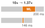
Более быстрый этап модели не ускоряет камерный конвейер линейно.
Заблуждение: Оптимизация модели переносится на ускорение системы линейно.
Закон Амдала34 ограничивает сквозное ускорение долей времени, которую оптимизация не затрагивает, — тем самым пределом, который заблуждения из введения уже показали для предобработки (Заблуждения и ловушки); Аппаратное ускорение формулирует общую границу как Уравнение (1). Конвейеризация может перекрывать этапы, повышая установившуюся пропускную способность (Глава 3.1), но этапы интерактивного пути захвата выполняются в строго последовательном порядке, так что ограничение действует в полной мере. Смартфонная камера тратит 60 ms из 200 ms пути захвата на классификацию сцены средствами ML, выполняемую между 100 ms обработки изображения сигнальным процессором и 40 ms тонокомпенсации и слияния HDR. Модель в 10× быстрее (6 ms на классификацию) сокращает путь лишь до 146 ms — сквозной выигрыш 1.37×. Даже бесконечно быстрая модель не может превзойти 1.43×, пока остальные 70 percent пути не изменяются. Оптимизация ML-системы требует профилирования всего графа исполнения; ускорение изолированного этапа даёт убывающую отдачу, как только этот этап перестаёт быть узким местом критического пути.
Ловушка: Предположение, что больше обучающих данных всегда улучшает качество развёрнутой модели.
Три ограничения ограничивают отдачу от масштабирования данных. Во-первых, алгоритмическая ёмкость (
Заблуждение: Один бинарный файл модели может эффективно обслуживать любое периферийное аппаратное обеспечение.
Команды нередко компилируют единственный артефакт модели и разворачивают его единообразно на разнообразных устройствах, относясь к развёртыванию как к шагу упаковки, а не как к проблеме совместной разработки с аппаратурой (hardware co-design). На практике компиляция под конкретную аппаратуру и понижение ядра (kernel lowering, т. е. перевод каждой операции в код, настроенный под набор инструкций и раскладку памяти целевой платформы) дают критически важную эффективность, которой лишаются универсальные бинарники. Например, квантованные операции INT8 на выделенном нейронном процессоре (NPU) достигают существенно большей пропускной способности на ватт, чем та же модель на универсальном CPU. Слияние ядер (kernel fusion) также удерживает промежуточные тензоры активаций в SRAM на кристалле, а не вытесняет их в энергоемкую внешнюю DRAM. Аппаратные цели различаются по типу, как уже показывали ускоритель дата-центра и мобильный NPU в Глава 4, и бинарник, скомпилированный для универсального мобильного CPU, не задействует специализированные матричные движки встраиваемого NPU. Переносимый артефакт модели может работать через разные бэкенды, но одна лишь переносимость не гарантирует эффективности. Развёртывание в продакшене требует профилирования целевой среды исполнения и аппаратуры, а затем выбора компиляции, ядер и раскладок памяти, отвечающих ресурсным и тепловым лимитам платформы.
13 Резюме
Одна и та же модель требует разной инженерии на телефоне и в дата-центре, потому что каждая цель развёртывания предоставляет модели разные аппаратные условия. Железный закон ML-систем (
Применяя принцип узкого места к архетипам рабочих нагрузок, инженеры определяют, чем доминируется задержка модели — эффективностью вычислений, пропускной способностью памяти или сетевым транзитом — прежде чем остановиться на одноузловой или гибридной архитектуре. Количественные компромиссы, сведённые в Таблица 9, и формализованная в Рисунок 11 многоуровневая последовательность отсева задают физические базовые линии для последующих решений о сжатии модели, проектировании конвейера данных и высокопроизводительном обслуживании.
Основные выводы: Одна модель, разная инженерия
- Физические ограничения определяют осуществимость: задержка распространения задаёт нижнюю границу времени удалённого отклика (около 36 ms на трансконтинентальный круговой рейс). Бюджеты мощности и памяти ограничивают то, что платформа может устойчиво выдерживать, поэтому осуществимое развёртывание должно укладываться в дедлайн задачи в пределах ресурсов целевой платформы.
- Выявляйте узкие места до оптимизации: одна и та же модель может быть ограничена вычислениями в батчевом обучении и ограничена пропускной способностью при инференсе с батчем 1. Железный закон и принцип узкого места указывают, какое ограничение доминирует; сокращение нелимитирующего этапа может снизить задержку запроса, не увеличив установившуюся пропускную способность.
- Сопоставляйте требования рабочей нагрузки бюджетам развёртывания: рабочей нагрузке, ограниченной вычислениями, — например обучению крупномасштабной модели изображений — часто нужны ресурсы облачного масштаба; рабочая нагрузка, ограниченная мощностью, — например распознавание ключевых слов — выигрывает от эффективности микроконтроллера. Инженеры должны выявлять лимитирующее ограничение в предполагаемых условиях исполнения, а не выбирать развёртывание по одному лишь названию модели.
- Проверяйте осуществимость до сравнения стоимости: проверки приватности, задержки и ресурсов отсеивают неосуществимые уровни ещё до сравнения стоимости. Среди оставшихся архитектуру, которая дешевле, решают не только экономия ресурсов, но и утилизация, выделение ресурсов и обслуживание парка.
- Гибридные архитектуры распределяют работу по ограничениям: пример с голосовым ассистентом относит детектирование слова-пробуждения к TinyML, речь-в-текст — к мобильному уровню, а понимание языка — к облаку. Разделение обучения и обслуживания (train-serve split), иерархическая обработка и прогрессивное развёртывание дают три шаблона комбинирования уровней; выбор зависит от требований каждого этапа.
- Развёртывание запускает цикл обратной связи: живые данные могут расходиться с условиями обучения, пока код и веса остаются неизменными, поэтому мониторинг и ограниченный операционный риск — часть архитектуры системы.
Парадигмы развёртывания — не продуктовые категории. Это режимы эксплуатации, сформированные физическими и операционными ограничениями, и выбор одной из них меняет то, какое ограничение вероятнее всего станет лимитирующим для системы. Обучение в дата-центре может упираться в пиковые вычисления (
Дальнейшие шаги: От теории к процессу
Схема принятия решений в Глава 9.2 определяет, где ML-система может исполняться, но команда должна использовать эти ограничения на протяжении всей разработки. Знание о том, где модель может работать, мало помогает, если команда узнаёт об этом слишком поздно, поскольку ограничения, обнаруженные на этапе запуска, обесценивают месяцы прежних решений. 03_ml_lifecycle разбирает именно такой сбой — бюджет памяти развёртывания, обнаруженный лишь после пяти месяцев работы, — и показывает, как такие ограничения должны двигаться в обратную сторону, к первому проектному совещанию. В нём вводятся жизненный цикл машинного обучения — итеративный инженерный процесс, ведущий систему от постановки задачи через развёртывание, мониторинг и обслуживание, — и рабочий процесс, разносящий ограничения вокруг него.
использованная литература
Amdahl, Gene M. 1967 г. «Validity of the single processor approach to achieving large scale computing capabilities». Proceedings of the April 18-20, 1967, spring joint computer conference on - AFIPS ’67 (Spring), AFIPS ’67 (Spring), 483–85. https://doi.org/10.1145/1465482.1465560.
Apple. 2024 г.a. Facial matching security. Apple Platform Security. https://support.apple.com/guide/security/facial-matching-security-sece151358d1/web.
Apple. 2024 г.b. The Secure Enclave. Apple Platform Security. https://support.apple.com/guide/security/the-secure-enclave-sec59b0b31ff/web.
Banbury, Colby, Vijay Janapa Reddi, Peter Torelli, и др. 2021 г. «MLPerf Tiny Benchmark». arXiv preprint. http://arxiv.org/abs/2106.07597v4.
Brown, Tom B., Benjamin Mann, Nick Ryder, и др. 2020 г. «Language Models are Few-Shot Learners». Advances in Neural Information Processing Systems 33: 1877–901. https://doi.org/10.48550/arxiv.2005.14165.
Cai, Han, Chuang Gan, Ligeng Zhu, и Song Han. 2020 г. «TinyTL: Reduce Activations, Not Trainable Parameters for Efficient On-Device Learning». Advances in Neural Information Processing Systems 33: 11285–97. http://arxiv.org/abs/2007.11622v5.
Chowdhery, Aakanksha и др. 2019 г. «Visual Wake Words Dataset». arXiv preprint arXiv:1906.05721.
David, Robert, Jared Duke, Advait Jain, и др. 2021 г. «TensorFlow Lite Micro: Embedded machine learning for TinyML systems». Proceedings of Machine Learning and Systems 3: 800–811.https://proceedings.mlsys.org/paper_files/paper/2021/hash/6c44dc73014d66ba49b28d483a8f8b0d-Abstract.html .
Dennard, Robert H., Frank H. Gaensslen, Hwa-Nien Yu, Victor L. Rideout, Elias Bassous, и Antoine R. LeBlanc. 1974 г. «Design of ion-implanted MOSFET’s with very small physical dimensions». IEEE J. Solid-State Circuits 9 (5): 256–68. https://doi.org/10.1109/jssc.1974.1050511.
Esmaeilzadeh, Hadi, Emily Blem, Renee St. Amant, Karthikeyan Sankaralingam, и Doug Burger. 2011 г. «Dark silicon and the end of multicore scaling». Proceedings of the 38th annual international symposium on Computer architecture, 365–76. https://doi.org/10.1145/2000064.2000108.
He, Kaiming, Xiangyu Zhang, Shaoqing Ren, и Jian Sun. 2016 г. «Deep Residual Learning for Image Recognition». 2016 IEEE Conference on Computer Vision and Pattern Recognition (CVPR), 770–78. https://doi.org/10.1109/cvpr.2016.90.
Hennessy, John L., и David A. Patterson. 2019 г. «A new golden age for computer architecture». Communications of the ACM 62 (2): 48–60. https://doi.org/10.1145/3282307.
Horowitz, Mark. 2014 г. «1.1 Computing’s energy problem (and what we can do about it)». 2014 IEEE International Solid-State Circuits Conference Digest of Technical Papers (ISSCC), 10–14. https://doi.org/10.1109/isscc.2014.6757323.
Janapa Reddi, Vijay, Brian Plancher, Susan Kennedy, и др. 2022 г. «Widening Access to Applied Machine Learning With TinyML». Harvard Data Science Review 4 (1). https://doi.org/10.1162/99608f92.762d171a.
Jouppi, Norm, George Kurian, Sheng Li, и др. 2023 г. «TPU v4: An Optically Reconfigurable Supercomputer for Machine Learning With Hardware Support for Embeddings». Proceedings of the 50th Annual International Symposium on Computer Architecture, 1–14. https://doi.org/10.1145/3579371.3589350.
Kang, Yiping, Johann Hauswald, Cao Gao, и др. 2017 г. «Neurosurgeon». International Conference on Architectural Support for Programming Languages and Operating Systems (ASPLOS), 615–29. https://doi.org/10.1145/3037697.3037698.
Karl Rupp. 2022 г. Microprocessor trend data. https://github.com/karlrupp/microprocessor-trend-data.
Lin, Ji, Wei-Ming Chen, Yujun Lin, John Cohn, Chuang Gan, и Song Han. 2020 г. «MCUNet: Tiny Deep Learning on IoT Devices». В Advances in Neural Information Processing Systems 33: Annual Conference on Neural Information Processing Systems 2020, NeurIPS 2020, December 6-12, 2020, virtual, под редакцией Hugo Larochelle, Marc’Aurelio Ranzato, Raia Hadsell, Maria-Florina Balcan, и Hsuan-Tien Lin. Curran Associates. https://proceedings.neurips.cc/paper/2020/hash/86c51678350f656dcc7f490a43946ee5-Abstract.html.
McKinsey Global Institute. 2021 г. The Internet of Things: Catching Up to an Accelerating Opportunity. McKinsey & Company.https://www.mckinsey.com/capabilities/mckinsey-digital/our-insights/iot-value-set-to-accelerate-through-2030-where-and-how-to-capture-it .
McMahan, Brendan, Eider Moore, Daniel Ramage, Seth Hampson, и Blaise Agüera y Arcas. 2017 г. «Communication-Efficient Learning of Deep Networks from Decentralized Data». International Conference on Artificial Intelligence and Statistics (AISTATS), Proceedings of Machine Learning Research, т. 54: 1273–82. http://proceedings.mlr.press/v54/mcmahan17a.html.
Naumov, Maxim, Dheevatsa Mudigere, Hao-Jun Michael Shi, и др. 2019 г. «Deep Learning Recommendation Model for Personalization and Recommendation Systems». arXiv preprint arXiv:1906.00091. http://arxiv.org/abs/1906.00091v1.
Park, Intaik, Ehsan Ardestani, Damian Reeves, и др. 2024 г. «Toward 100TB recommendation models with embedding offloading». 18th ACM Conference on Recommender Systems, 841–43. https://doi.org/10.1145/3640457.3688037.
Patterson, David, Joseph Gonzalez, Quoc Le, и др. 2021 г. «Carbon Emissions and Large Neural Network Training». arXiv preprint arXiv:2104.10350. https://arxiv.org/abs/2104.10350.
Pichai, Sundar. 2023 г. Introducing Gemini: Our Largest and Most Capable AI Model. https://blog.google/technology/ai/google-gemini-ai/.
Pope, Reiner, Sholto Douglas, Aakanksha Chowdhery, и др. 2023 г. «Efficiently Scaling Transformer Inference». Proceedings of Machine Learning and Systems (MLSys) 5: 606–24.https://proceedings.mlsys.org/paper_files/paper/2023/hash/c4be71ab8d24cdfb45e3d06dbfca2780-Abstract-mlsys2023.html .
Radford, Alec, Jeffrey Wu, Rewon Child, David Luan, Dario Amodei, и Ilya Sutskever. 2019 г. Language models are unsupervised multitask learners. OpenAI.https://cdn.openai.com/better-language-models/language_models_are_unsupervised_multitask_learners.pdf .
Rajbhandari, Samyam, Jeff Rasley, Olatunji Ruwase, и Yuxiong He. 2020 г. «ZeRO: Memory Optimizations Toward Training Trillion Parameter Models». SC20: International Conference for High Performance Computing, Networking, Storage and Analysis, 1–16. https://doi.org/10.1109/sc41405.2020.00024.
Sandler, Mark, Andrew Howard, Menglong Zhu, Andrey Zhmoginov, и Liang-Chieh Chen. 2018 г. «MobileNetV2: Inverted Residuals and Linear Bottlenecks». 2018 IEEE/CVF Conference on Computer Vision and Pattern Recognition, 4510–20. https://doi.org/10.1109/cvpr.2018.00474.
Shi, Weisong, Jie Cao, Quan Zhang, Youhuizi Li, и Lanyu Xu. 2016 г. «Edge Computing: Vision and Challenges». IEEE Internet of Things Journal 3 (5): 637–46. https://doi.org/10.1109/jiot.2016.2579198.
Teerapittayanon, Surat, Bradley McDanel, и Hsiang-Tsung Kung. 2017 г. «Distributed deep neural networks over the cloud, the edge and end devices». IEEE International Conference on Distributed Computing Systems (ICDCS), 328–39. https://doi.org/10.1109/ICDCS.2017.226.
The Green Grid. 2007 г. Green Grid Data Center Power Efficiency Metrics: PUE and DCIE. The Green Grid.
Touvron, Hugo, Thibaut Lavril, Gautier Izacard, и др. 2023 г. «LLaMA: Open and Efficient Foundation Language Models». arXiv preprint arXiv:2302.13971. http://arxiv.org/abs/2302.13971v1.
Touvron, Hugo, Louis Martin, Kevin Stone, и др. 2023 г. «Llama 2: Open Foundation and Fine-Tuned Chat Models». arXiv preprint arXiv:2307.09288. http://arxiv.org/abs/2307.09288v2.
Vasisht, Deepak, Zerina Kapetanovic, Jongho Won, и др. 2017 г. «FarmBeats: An IoT Platform for Data-Driven Agriculture». 14th USENIX Symposium on Networked Systems Design and Implementation (NSDI 17), 515–29. https://www.usenix.org/conference/nsdi17/technical-sessions/presentation/vasisht.
Warden, Pete, и Daniel Situnayake. 2020 г. TinyML: Machine learning with TensorFlow Lite on Arduino and ultra-low-power microcontrollers. O’Reilly Media.
Weiser, Mark. 1991 г. «The Computer for the 21st Century». Scientific American 265 (3): 94–104. https://doi.org/10.1038/scientificamerican0991-94.
Williams, Samuel, Andrew Waterman, и David Patterson. 2009 г. «Roofline: An Insightful Visual Performance Model for Multicore Architectures». Communications of the ACM 52 (4): 65–76. https://doi.org/10.1145/1498765.1498785.
Wulf, Wm. A., и Sally A. McKee. 1995 г. «Hitting the memory wall: Implications of the Obvious». ACM SIGARCH Computer Architecture News 23 (1): 20–24. https://doi.org/10.1145/216585.216588.
Zhang, Yundong, Naveen Suda, Liangzhen Lai, и Vikas Chandra. 2017 г. Hello Edge: Keyword Spotting on Microcontrollers. https://arxiv.org/abs/1711.07128.
Сноски
Парадигма развёртывания: Отличительный режим эксплуатации, определяемый ограничениями задержки, мощности, памяти и связности. Спектр «от облака до TinyML» меняет то, какие ресурсы ограничивают систему; оптимизация внутри неосуществимого режима не может удовлетворить бюджет развёртывания приложения. Например, повышение пропускной способности облачной модели на 5 процентов не спасёт приложение, у которого бюджет задержки в 10 мс превышен одним лишь сетевым обходным циклом.↩ Вернуться к тексту
Задержка (latency): время от отправки запроса до получения результата, соответствует
в железном законе, где задержка распространения входит через слагаемое фиксированных накладных расходов . Световой барьер делает этот нижний предел распространения неустранимым, что количественно описывает Уравнение 1. Каждая миллисекунда, израсходованная на расстояние, — это миллисекунда, недоступная для инференса модели; именно поэтому световой барьер заставляет выбирать парадигму, а не просто оптимизировать.↩ Вернуться к тексту Масштабирование Деннарда (Dennard scaling): Названо в честь Роберта Деннарда, чья команда в IBM описала закономерности масштабирования MOSFET, при которых уменьшение размеров устройств позволяло снижать напряжение и ток, сохраняя плотность мощности приблизительно под контролем (Dennard и др. 1974 г.). По мере замедления масштабирования напряжения и превращения энергии в архитектурное ограничение первого порядка рост производительности сместился к параллелизму и специализации: многоядерным процессорам, GPU и TPU (Hennessy и Patterson 2019 г.; Esmaeilzadeh и др. 2011 г.).↩ Вернуться к тексту
Тензорный процессор (TPU): Интегральная схема специального назначения (ASIC), спроектированная для операций, типичных в машинном обучении, прежде всего матричного умножения. Специализация обменивает универсальную гибкость на эффективность, зависящую от рабочей нагрузки; её преимущество перед GPU зависит от модели, числового формата и сравниваемых систем (Jouppi и др. 2023 г.).↩ Вернуться к тексту
Пропускная способность памяти (стена памяти): термин «стена памяти» введён в Wulf и McKee (1995 г.), где предсказано, что разрыв производительности процессора и памяти со временем станет доминировать в производительности системы, — предсказание, сбывшееся для рабочих нагрузок МЛ, где перемещение весов или активаций может ограничивать производительность. Ограничивает ли пропускная способность данную нагрузку, зависит от арифметической интенсивности, размера батча, повторного использования данных, паттерна доступа и баланса аппаратуры, а не только от размера модели.↩ Вернуться к тексту
Архетип рабочей нагрузки: классификация рабочих нагрузок МЛ по доминирующему узкому месту, а не по семейству моделей. Ошибочная идентификация архетипа тратит усилия по оптимизации на не то слагаемое железного закона — например, когда команды добавляют FLOP/s ускорителя в конвейер инференса, ограниченный пропускной способностью, и получают мало улучшений, пока доминирует передача памяти.↩ Вернуться к тексту
Deep learning recommendation model (DLRM): архитектура Meta 2019 года, воплощающая архетип, ограниченный ёмкостью. В таком масштабе исполнение ограничивают скорее ёмкость памяти и коммуникация
, чем собственно . Эти требования мотивируют специализированные проекты кластеров, где дефицитный ресурс — память, а не арифметика.↩ Вернуться к тексту Критический путь: Самая длинная последовательная цепочка зависимых операций в конвейере. Сформулированное в тексте правило задержки строгое: если 200-миллисекундный межрегиональный сетевой вызов появляется где-либо на критическом пути, система с общим бюджетом 100 ms гарантированно провалится, как бы быстро ни работали все остальные стадии. Инференс модели не обязательно является самой длинной стадией; доминировать могут пред- и постобработка, из-за чего критический путь оказывается длиннее, чем подсказывает одно лишь исполнение модели.↩ Вернуться к тексту
Блок нейронной обработки (NPU): Выделенный аппаратный блок на мобильной системе-на-кристалле, схемы которого спроектированы для низкоточных тензорных операций. Эта специализация может повысить энергоэффективность по сравнению с исполнением на CPU, помогая AI-нагрузкам укладываться в лимиты энергопотребления мобильных устройств.↩ Вернуться к тексту
Спектр стоимости ML-аппаратного обеспечения: Миллионократный разброс стоимости делает выбор парадигмы развёртывания решением не только физическим, но и экономическим. Одна и та же целевая точность может быть достигнута на дешёвом микроконтроллере только после существенного сокращения модели или на дорогостоящем дата-центровом ускорителе с гораздо большим ресурсным бюджетом, и эти два проекта имеют разные профили задержки, энергопотребления и эксплуатационных затрат.↩ Вернуться к тексту
Эффективность использования энергии (PUE): Отношение полной энергии объекта к энергии ИТ-оборудования за тот же период (The Green Grid 2007 г.), развито в Измерение мощности и энергии. Показатель охватывает накладные расходы объекта, включая охлаждение и распределение питания. Даже PUE 1,06 оставляет существенную нечисловую (noncompute) мощность в масштабе дата-центра. TinyML не требует выделенного охлаждения объекта, хотя сенсорика, связь, потери при преобразовании и энергопотребление в спящем режиме всё равно входят в его полный энергобюджет системы. Эти затраты на уровне устройств находятся вне PUE.↩ Вернуться к тексту
Облако как утилитарные вычисления: Модель обеспечения (provisioning), в которой провайдер владеет и управляет специализированным портфелем аппаратного обеспечения, который немногие организации могли бы экономически поддерживать сами, и сдаёт его в аренду по требованию. Аренда даёт прямой доступ к архитектуре, которую требует каждый архетип рабочей нагрузки — например, плотные модули ускорителей для вычислительно-ограниченных нагрузок, узлы с HBM для нагрузок, ограниченных пропускной способностью, и системы с большой памятью и быстрыми межсоединениями для нагрузок, ограниченных ёмкостью, — без приобретения и обслуживания всей установки целиком.↩ Вернуться к тексту
Промышленный интернет вещей (IIoT): область, где ограничения на задержку могут задаваться физической безопасностью, а не восприятием пользователя. Удержание восприятия и решения об остановке на месте устраняет слагаемое дальней сети, но оставляет краевую систему ограниченной её локальной вычислительной ёмкостью
.↩ Вернуться к тексту Стена данных интернета вещей (IoT): развёртывания IoT зависят от непрерывных потоков датчиков с устройств, распределённых по домам, заводам, фермам, транспортным средствам и инфраструктуре (McKinsey Global Institute 2021 г.). Во многих таких сценариях совокупный
сырых потоков превышает доступный бюджет восходящего канала или бюджет задержки для централизованного приёма, что делает локальную краевую обработку архитектурным требованием, а не просто оптимизацией затрат.↩ Вернуться к тексту Ограничения встроенных периферийных устройств: Для типичных периферийных конфигураций 1–8 ГБ вмещают примерно 1–8 млрд весов INT8 до учёта активаций, состояния среды исполнения и прочих буферов, поэтому потолок задаёт бюджет памяти, а не фиксированное число параметров. Устойчивые вычисления дополнительно ограничены энергопотреблением, охлаждением и циклом работы.↩ Вернуться к тексту
Координация парка периферийных устройств: Управление тысячами распределённых периферийных устройств усиливает проблемы координации: прерывистая связь вызывает дрейф версий моделей, разнородность оборудования требует оптимизации под каждую цель, а ограниченный удалённый доступ может превращать неудачные откаты прошивки в необходимость визита на площадку.↩ Вернуться к тексту
Розница без касс: архитектура магазина, в которой наблюдения камер объединяются локально с событиями полок и состоянием транзакций, а передаются только выбранные события или агрегаты. Эти производные записи всё ещё находятся внутри границы приватности.↩ Вернуться к тексту
Индустрия 4.0: четвёртая промышленная революция интегрирует машинное обучение в контур обратной связи «датчик–актуатор» на заводах. В иллюстративном сценарии сварочного робота обнаружение дефектов сэмплируется с частотой 60 Hz, что даёт интервал сэмплирования 16.7 ms; если каждый отклик должен завершаться до следующего сэмпла, весь путь от датирования до актуации должен укладываться в этот дедлайн. Требование завершения — допущение сценария; сама по себе частота сэмплирования не устанавливает дедлайн контура управления и не гарантирует безопасную работу.↩ Вернуться к тексту
Предиктивное обслуживание: использование данных датчиков, таких как вибрация и температура, для оценки состояния оборудования и риска отказа. Непрерывный мониторинг делает частоту датирования, рабочий цикл, энергопотребление и локальное хранилище ограничениями первого класса. Узлам мониторинга на батарейках может требоваться средняя работа менее ватта, тогда как промышленные шлюзы с питанием от сети могут использовать гораздо больший лимит.↩ Вернуться к тексту
Вычислительная фотография: применение алгоритмов машинного обучения (например, слияния нескольких кадров и нейросетевого шумоподавления) для преодоления физических ограничений маленьких мобильных фотосенсоров.↩ Вернуться к тексту
Сокращение мобильных моделей зрения: архитектуры типа MobileNet уменьшают объём вычислений в типовых слоях компьютерного зрения, сохраняя полезную точность для мобильных задач. Системный вывод здесь таков: мобильное развёртывание часто требует смены семейства моделей, а не просто переноса той же модели на телефон.↩ Вернуться к тексту
Система-на-кристалле (SoC): мобильные SoC объединяют ядра CPU, GPU и NPU с кэшами и контроллерами памяти, чтобы снизить затраты на перемещение данных. Мобильная DRAM, как правило, находится вне кристалла, а достижимый размер модели зависит от ёмкости, точности, рабочей памяти, пропускной способности и задержки.↩ Вернуться к тексту
Face ID: Apple выполняет сопоставление лиц внутри Secure Enclave и шифрует сохранённые математические представления так, что они доступны только этой подсистеме и не покидают устройство (Apple 2024 г.a, 2024 г.b). Пример показывает, как локальный инференс и аппаратная изоляция могут снизить экспозицию при передаче данных, поддерживая аутентификацию с низкой задержкой.↩ Вернуться к тексту
Порог 1 мВт: сбор энергии из окружающей среды может питать устройство неограниченно долго, только если долгосрочная собираемая мощность превышает среднюю нагрузку всей системы. Доступная мощность различается между источниками и средами. Солнечные ячейки размером с ноготь большого пальца могут давать ~10 мВт на улице, но ~10 мкВт в помещении; термоэлектрические генераторы на тёплых трубах — ~100 мкВт; радиочастотная энергия от близких передатчиков — ~10 мквт. Этот переход может превратить модель развёртывания из «времени жизни, ограниченного батареей» в «развернул и забыл», но он зависит от источника, среды и рабочей нагрузки.↩ Вернуться к тексту
Всюду распространённые вычисления: Видение повсеместных вычислений (ubiquitous computing) Марка Вейзера предполагало, что вычисления будут вплетены в повседневную среду, пока не перестанут привлекать прямое внимание (Weiser 1991 г.). TinyML — один из современных путей к этому видению, поскольку снижает стоимость и энергопотребление интеллектуального датчика до уровня, пригодного для массового развёртывания.↩ Вернуться к тексту
Микроконтроллер (MCU): Однокристальный компьютер, в котором минимальная стоимость и энергопотребление приоритетнее производительности. Поэтому соответствие объёму памяти становится предварительным условием развёртывания: память, реально доступная целевой платформе, зачастую на порядки меньше той, что предоставляет смартфон.↩ Вернуться к тексту
Энергетический разрыв TinyML: На рисунке сравниваются разные задачи на разном аппаратном обеспечении и с разными границами учёта энергии; его соотношения не выделяют эффект одной лишь аппаратной интеграции. Инференс ResNet-50 с батчем размера 1 на облачном ускорителе потребляет около 75.5 mJ энергии ускорителя, тогда как постоянно работающий распознаватель ключевых слов использует около 10 μJ — разрыв в ~7,500×. Запрос к облачной LLM, около 1 kJ, увеличивает разрыв до 100,000,000× — это диапазон, отложенный на Рисунок 7.↩ Вернуться к тексту
Развёртывание от круглой батарейки: Батарея CR2032 (225 mAh при 3 V, ~675 mWh) в идеале питает полную систему с потреблением 10–50 мкВт около 1.5–7.7 years. Такая модель эксплуатации «развернул и забыл» стимулирует развитие прерывистых вычислений (intermittent computing), где устройство засыпает между инференсами, чтобы растянуть энергетический бюджет на годы автономной работы.↩ Вернуться к тексту
Диапазон устройств TinyML: Этот физический диапазон отражает прямой компромисс между контекстом развёртывания и вычислительными возможностями. Миллиметровые системы отдают приоритет минимальной мощности для однофункциональных длительных задач, тогда как платы размером с ладонь предлагают больше сенсоров, интерфейсов и средств отладки при более высокой стоимости и энергопотреблении. Поэтому размер и энергопотребление отладочной платы не следует считать пределами для готового продукта TinyML.↩ Вернуться к тексту
Ограничения обучения на устройстве: Обновление модели требует рабочей памяти сверх той, что нужна для её применения, включая информацию, сохранённую от вычисления предсказания для определения изменений параметров. Промежуточные результаты можно отбрасывать лишь после их последнего использования, а это часто происходит позже при обучении, чем при инференсе. Имея лишь 256 КБ–2 МБ ОЗУ, многие микроконтроллеры не могут удержать всё состояние обучения; специализированные методы сокращают это состояние, ограничивая множество изменяемых параметров. TinyTL, например, обновляет лишь малую часть модели так, чтобы обновление поместилось в память микроконтроллера (Cai и др. 2020 г.). Поэтому обучение в другом месте с доставкой обновлённой модели — распространённое проектное решение, хотя ограниченная локальная адаптация остаётся возможной.↩ Вернуться к тексту
Фрагментация экосистемы TinyML: TinyML охватывает семейства микроконтроллеров, такие как Arm Cortex-M, RISC-V и Xtensa, каждое со своими наборами инструкций, раскладками памяти, ядрами и инструментальными цепочками производителей; облачные и мобильные стеки тоже различаются, но их среды исполнения обычно скрывают больше этого аппаратного разнообразия. Поэтому модель, оптимизированная под одну целевую платформу микроконтроллера, может потребовать перенастройки и повторной валидации для другой, что многократно увеличивает стоимость развёртывания на нескольких устройствах.↩ Вернуться к тексту
Постоянно работающее распознавание ключевых слов: Небольшая модель, непрерывно слушающая акустический профиль триггерной фразы. Допустимый бюджет детектора зависит от платформы, но даже несколько дополнительных милливатт постоянного потребления могут заметно сократить время работы от батареи, а архитектура успешна лишь тогда, когда постоянно активный путь потребляет значительно меньше средней мощности, чем компоненты, которые он не даёт разбудить.↩ Вернуться к тексту
Асимметрия затрат обучения и обслуживания: обучение обычно требует множества прямых и обратных проходов, тогда как один запрос инференса использует обученный артефакт для одного или нескольких прямых проходов. Обучение не является буквально одноразовым, поскольку модели могут дообучаться, а стоимость инференса резко зависит от размера модели, длины последовательности, формирования батчей и накладных расходов на обслуживание. Экономическое обоснование разделения — амортизация: многократное использование позволяет распределить фиксированную стоимость каждого цикла обучения на множество обслуженных предсказаний.↩ Вернуться к тексту
Закон Амдала: Этот принцип, формализованный в Amdahl (1967 г.) для масштабирования мультипроцессоров, напрямую применим к конвейерам развёртывания ML, где модель — лишь один из многих этапов. Если на ML приходится 30–50 percent времени выполнения, то даже 100×-кратное ускорение модели даёт лишь около 1.4–2× сквозного улучшения, поскольку остальная часть конвейера не изменяется. Команды, бенчмаркащие задержку модели в изоляции, систематически переоценивают выигрыш от развёртывания.↩ Вернуться к тексту